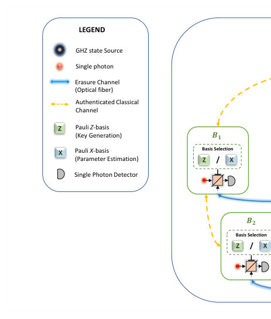

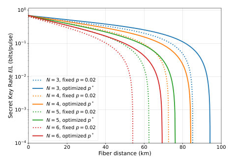
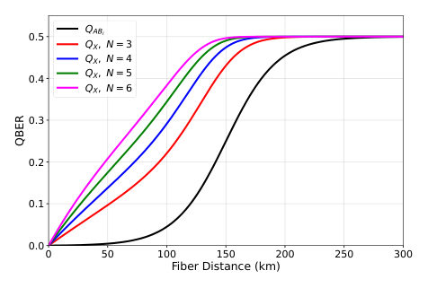

← Index · ← Previous · Next →
Authors: Kai Li, Tian Ooi, Jack F. Doyle, Konstantin Herb, Emil Pellett, Martin Pimon, Thorsten Schumm, Steven M. Girvin, Leo Radzihovsky, Jun Ye
Type: both · Category: other · PDF: https://arxiv.org/pdf/2610.04205v1
Analysis basis: full PDF text, analyzed in chunks
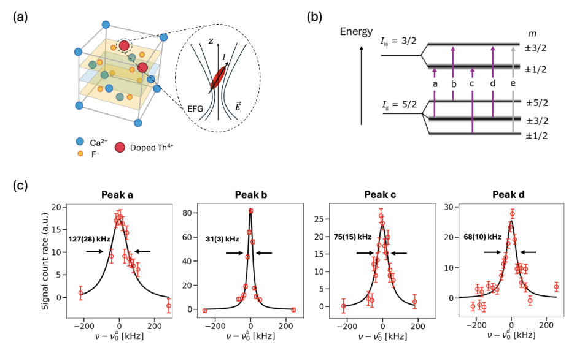
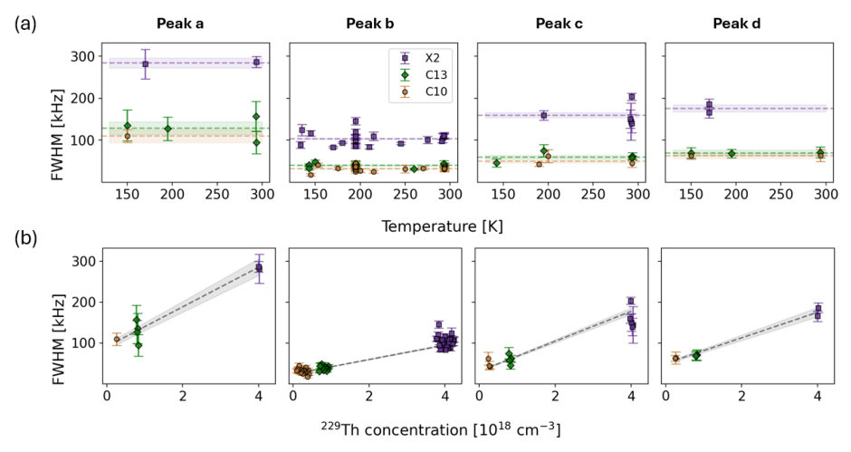
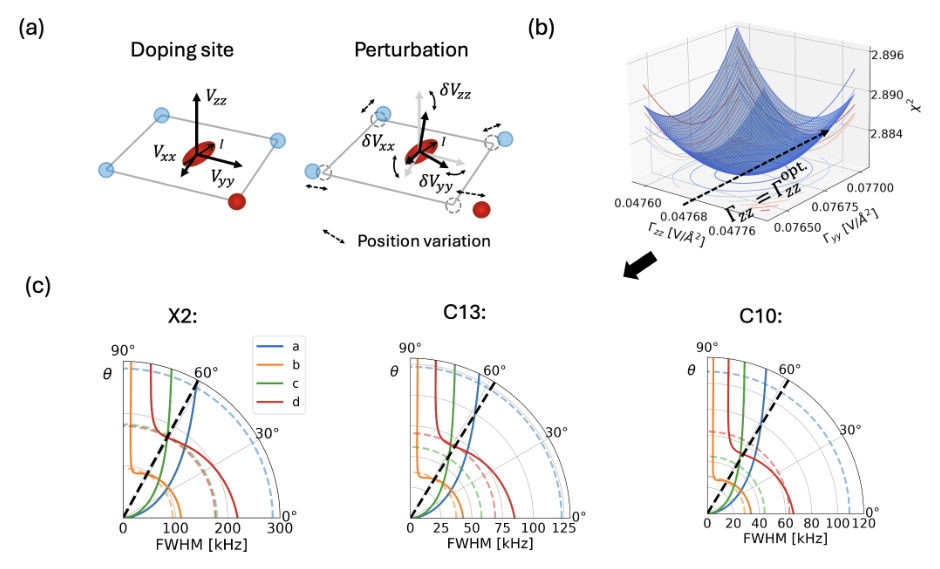
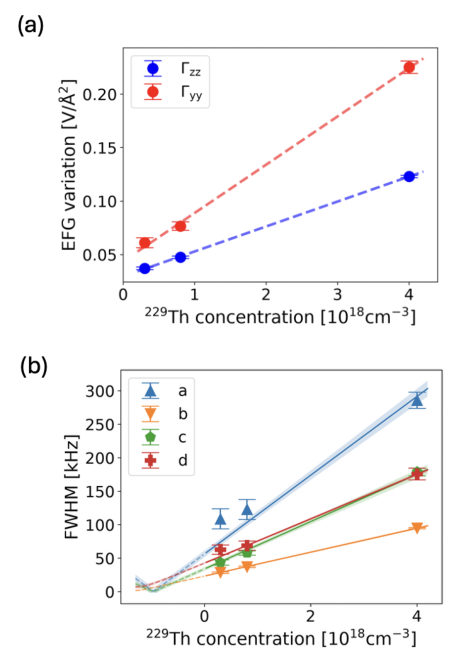
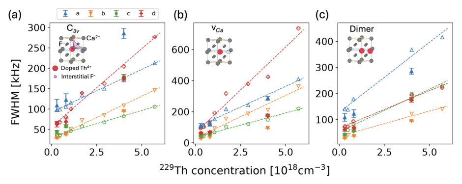
Summary. This paper characterizes the source of inhomogeneous broadening in solid-state $^{229} ext{Th}$ nuclear clocks embedded in $ ext{CaF}_2$. By measuring linewidths across varying conditions, the authors determine that the broadening is dominated by static, random variations in the local Electric-Field Gradient (EFG). The study provides both experimental evidence and DFT simulations confirming that this EFG disorder scales linearly with dopant concentration, offering crucial guidance for material engineering.
Why it may be interesting. This work is highly relevant as it tackles the fundamental limitations of solid-state quantum sensors by pinpointing the microscopic source of decoherence (EFG disorder) and providing a quantitative model for its engineering mitigation.
Main problem. The study investigates the origin of the large inhomogeneous linewidth observed in solid-state $^{229} ext{Th}: ext{CaF}_2$ nuclear clocks, which significantly exceeds the natural linewidth.
Main result. The dominant source of broadening is identified as variations in the local Electric-Field Gradient (EFG), which increases linearly with the thorium dopant concentration.
Method. The research combines systematic experimental measurements of linewidths versus temperature and concentration with theoretical modeling using first-principle DFT calculations.
Model / system. The system is the $^{229} ext{Th}$ nuclear transition in a $ ext{CaF}_2$ crystal host, governed by interactions involving the isomeric shift and the local EFG. The broadening is modeled using the statistical distribution of EFG variations.
Key observables. Linewidth ($\Gamma$) as a function of temperature, thorium concentration, and quadrupole state; frequency shifts related to EFG components ($V_{zz}, V_{yy}$).
Important parameters / regimes. Linear dependence of linewidth on Th concentration; $1/r^3$ scaling for long-range dopant perturbations; EFG ratios ($\Gamma_{yy}/\Gamma_{zz} \sim 1.6$).
Assumptions / limitations. The dominant broadening mechanism is attributed to static, long-range, dopant-induced variations in the local EFG, which are assumed to follow a specific statistical distribution.
Figures summary. Figures illustrate the dependence of linewidths on various parameters and show schematic representations of how the surrounding charge distribution influences both the isomeric shift and the local EFG.
Paper structure. The paper progresses from observing the linewidth discrepancy to systematically measuring its dependence on external parameters (T, concentration), identifying EFG disorder as the cause, and finally providing theoretical explanations and computational verification using DFT.
Narrow linewidth (high-Q) quantum discriminators are essential for realizing solid-state $^{229}$Th nuclear clocks, yet the observed transition linewidths remain at the tens-to-hundreds-of-kilohertz level, far exceeding the sub-Hertz linewidth set by the radiative lifetime of the nuclear isomer. Here, we investigate the origin of this broadening in $^{229}$Th:CaF$_2$ through systematic measurements of the linewidth as functions of temperature, thorium concentration, and quadrupole state, accompanied by theoretical analysis and first-principle simulations. We find that the linewidth is independent of temperature, increases linearly with thorium concentration, and depends strongly on the quadrupole state. Data analysis identifies variations of the local electric-field gradient (EFG) as the dominant source of inhomogeneous broadening and reveals that the EFG disorder increases linearly with thorium concentration. The observed Lorentzian line shapes and linewidth linear concentration dependence are explained naturally from the $1/r^3$ scaling of a random distribution of long-range dopant-induced perturbations. Complementary atomistic and \textit{ab initio} density-functional-theory calculations reproduce these characteristic features and provide insights into the microscopic defect configurations responsible for the broadening. These results establish the dominant broadening mechanism in solid-state $^{229}$Th and provide guidance for engineering nuclear-clock materials with reduced inhomogeneous broadening.
Authors: Yuan-Hong Tao, Yu-Xin Wu, Bing Xie, Lin Zhang
Type: theory · Category: quantum information and computing · PDF: https://arxiv.org/pdf/2610.04930v1
Analysis basis: full PDF text, analyzed in chunks
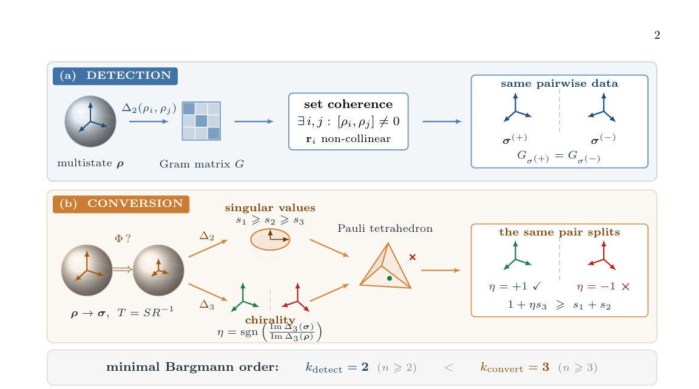
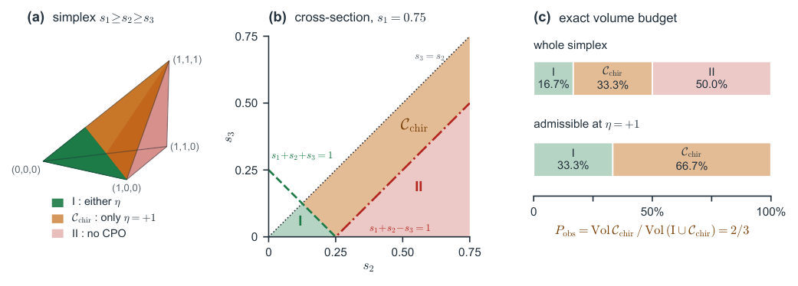
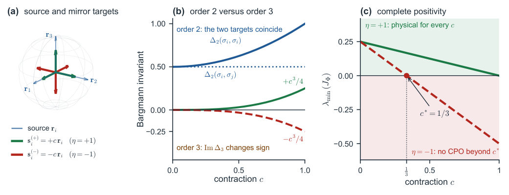
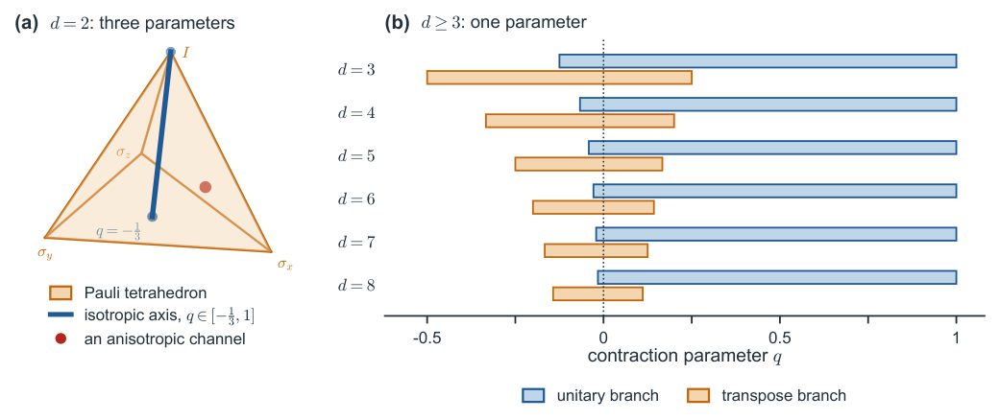
Summary. This paper develops a resource-conversion theory for quantum multistates, showing that while pairwise overlaps (second-order invariants) are sufficient for detection, exact transformation requires higher-order invariants (third-order invariants) due to chirality. The analysis rigorously defines the necessary and sufficient conditions for such conversions, revealing structural rigidity in higher dimensions.
Why it may be interesting. This work provides deep mathematical constraints on how quantum correlations (coherence) can be transformed, linking fundamental algebraic invariants (Bargmann invariants) directly to operational feasibility (complete positivity) in resource theory.
Main problem. The paper determines the exact resource-conversion theory for quantum multistates under common commutativity-preserving operations (CPOs). It investigates whether pairwise state overlaps are sufficient to govern the deterministic transformation between coherent ensembles.
Main result. For qubits, detectability relies on second-order invariants, but exact conversion requires third-order invariants, establishing an order separation ($k_{ ext{detect}}=2 < k_{ ext{convert}}=3$). Furthermore, the structure is rigid for higher dimensions ($d \ge 3$).
Method. The authors use resource theory concepts, analyzing the complete positivity (CP) of the candidate transformation channel ($\Phi_T$) derived from pairwise overlaps. They employ Bargmann invariants ($\Delta_k$) to characterize the state geometry and the transformation's orientation (chirality).
Model / system. The system under study is a quantum multistate $ ho = ( ho_1, \dots, ho_n)$ in a finite-dimensional Hilbert space, with a specific focus on qubits ($d=2$). The transformations are constrained to Common Commutativity-Preserving Operations (CPOs).
Key observables. Pairwise overlaps (second-order Bargmann invariants, $\Delta_2$), third-order Bargmann invariants ($\Delta_3$), singular values of the transformation matrix $T$, and the chirality sign $\eta$.
Important parameters / regimes. The dimensionality $d$ (especially $d=2$ vs $d \ge 3$), the number of states $n$, and the degree of the invariant ($k=2$ vs $k=3$).
Assumptions / limitations. The analysis assumes the existence of a candidate channel $\Phi_T$ fixed by the ratio of Bloch matrices ($T = S R^{-1}$) and relies on the definition of CPOs.
Figures summary. Figure 1 contrasts detection (using $\Delta_2$) versus conversion (requiring $\Delta_3$). Figure 2 illustrates the singular-value simplex, partitioning it into regions (I, II, $\mathcal{C}_{ ext{chir}}$) based on CP conditions.
Paper structure. The paper establishes the resource-conversion theory by first analyzing the qubit case ($d=2$), demonstrating the necessity of third-order invariants due to chirality. It then generalizes to higher dimensions ($d \ge 3$), showing a rigid structure governed by lower-degree invariants.
Basis-independent coherence of a quantum multistate is fixed by whether its constituent states commute, and for qubits it is detected by pairwise state overlaps alone. What governs its deterministic transformation has been open. We give the exact resource-conversion theory of quantum multistates under common commutativity-preserving operations (CPOs). For qubits, pairwise Bargmann invariants determine the singular values of the unique candidate channel, while a single third-order Bargmann phase determines its orientation. Complete positivity then yields a necessary and sufficient criterion for exact conversion. The criterion identifies a chirality-sensitive shell $\mathcal C_{\rm chir}$, within which targets with identical pairwise geometry can differ in convertibility solely by the sign of their cubic invariant. This yields an order separation, $k_{\rm detect}=2<3=k_{\rm convert}$, for qubit multistates of every size $n\geqslant3$. The chirality-sensitive shell occupies exactly one third of the singular-value simplex, while mirror reflection obstructs two thirds of the admissible orientation-preserving transformations by volume. For $d\geqslant3$, by contrast, the structure is rigid: every resourceful conversion is realized by either an isotropic depolarizing or a transpose-depolarizing channel. Convertibility is then decided by centered Bargmann invariants of degree at most $d^2$.
Authors: Dipanjan Bera, Ramniwas Meena, Neel Kanth Kundu
Type: theory · Category: quantum information and computing · PDF: https://arxiv.org/pdf/2610.05448v1
Analysis basis: full PDF text, analyzed in chunks



Summary. This work rigorously analyzes the performance of multipartite quantum key distribution using GHZ states over noisy optical fibers. By modeling realistic channel impairments like loss and dark counts, the authors derive error rates and calculate the finite-key secret key rate. The results quantify the unavoidable degradation of secure key rates as the network size or distance increases.
Why it may be interesting. It provides a detailed, physically grounded analysis of key distribution security limits, which is crucial for designing practical quantum communication networks.
Main problem. The paper analyzes the performance limits of Quantum Conference Key Agreement (QCKA) using GHZ states when transmitted over realistic optical fiber channels.
Main result. The achievable secret key rate (SKR) decreases with both increased fiber distance and the number of participating parties, although optimizing parameter estimation can extend the secure range.
Method. The authors derive closed-form expressions for error rates by modeling the channel as an erasure-Pauli channel with dark counts, and then integrate these into a finite-key SKR framework optimized via Brent's method.
Model / system. The system is an N-party QCKA protocol utilizing N-qubit GHZ states distributed over optical fibers. The channel incorporates fiber loss, polarization decoherence, and detector dark counts.
Key observables. Local bit-error rate ($Q_{AB_i}$), global phase-error rate ($Q_X$), and the finite-key Secret Key Rate (SKR).
Important parameters / regimes. Fiber transmissivity ($\eta$), dark-count probability ($p_{dc}$), number of parties ($N$), and fiber distance ($d$).
Assumptions / limitations. The analysis assumes the dephasing-dominated regime for the fiber channel and models the channel as an extension of the bipartite erasure-Pauli channel.
Figures summary. Figures illustrate the system model, plot error rates ($Q_{ABi}$ and $Q_X$) versus distance for varying $N$, and compare the finite-key SKR against the asymptotic limit for different $N$.
Paper structure. The paper establishes the physical model, derives error rate formulas based on the channel impairments, integrates these into the finite-key SKR framework, and concludes with numerical results showing the scaling of SKR with distance and $N$.
Quantum conference key agreement (QCKA) enables multiple spatially separated users to establish a common key with composable information-theoretic security by exploiting multipartite quantum correlations. Greenberger--Horne--Zeilinger (GHZ) states are a natural resource for this task, but their distribution over optical fiber is degraded by transmission loss, polarization decoherence, and detector imperfections. We investigate the finite-key performance of an $N$-party GHZ-based QCKA system using the $N$-BB84 protocol, where each optical link is modeled by extending the bipartite erasure--Pauli channel to incorporate detector dark counts. We characterize the impact of this quantum channel on the shared GHZ state and derive closed-form expressions for the error rates. The analytical results reveal that the local bit-error rate depends only on transmissivity and dark counts, while the global phase-error rate compounds over all $N-1$ links and therefore degrades faster with both distance and the number of parties. These error rates are integrated into a finite-key secret-key-rate (SKR) framework, in which we optimize the parameter-estimation probability via Brent's derivative-free method. Numerical results show that increasing fiber distance and network size reduce the achievable SKR. Furthermore, the optimized parameter-estimation probability consistently increases the SKR and extends the maximum secure distance relative to a fixed-allocation baseline, with comparison to the asymptotic limit quantifying the residual finite-key penalty.
Authors: Michael Zurel
Type: theory · Category: quantum information and computing · PDF: https://arxiv.org/pdf/2610.06607v1
Analysis basis: full PDF text, analyzed in chunks
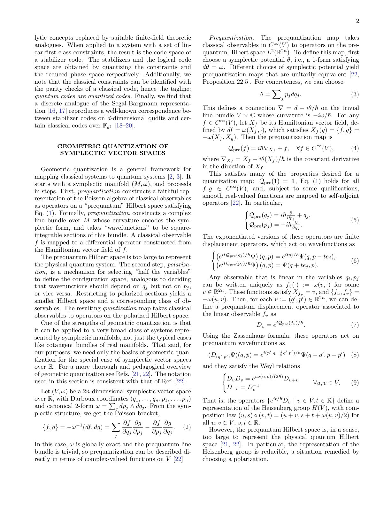
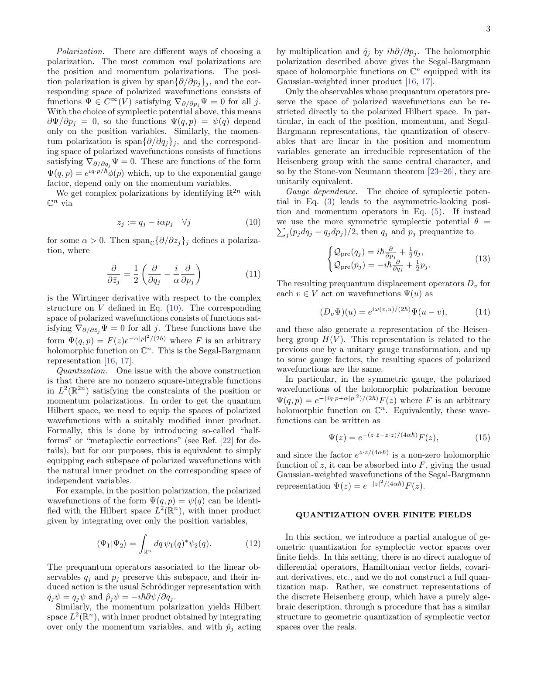
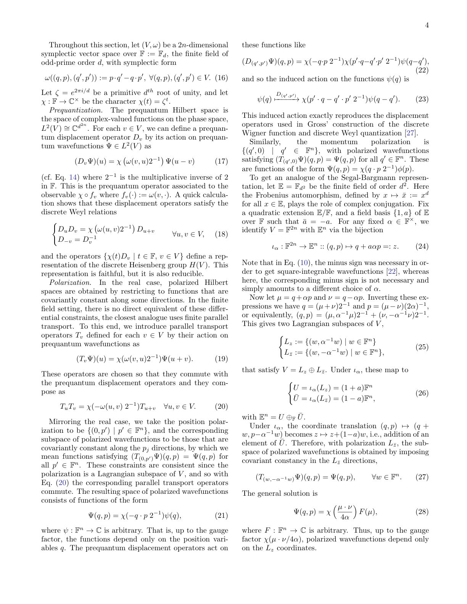
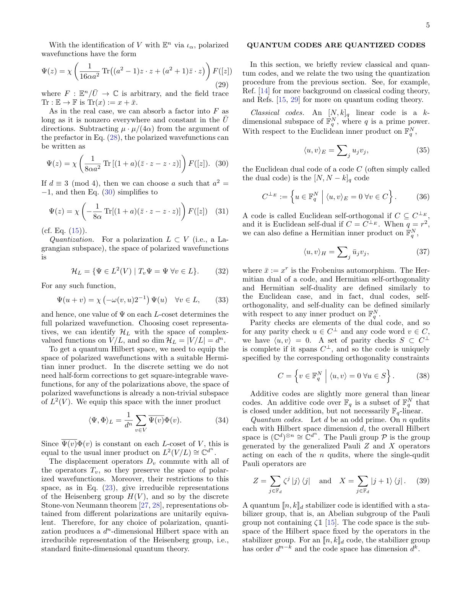
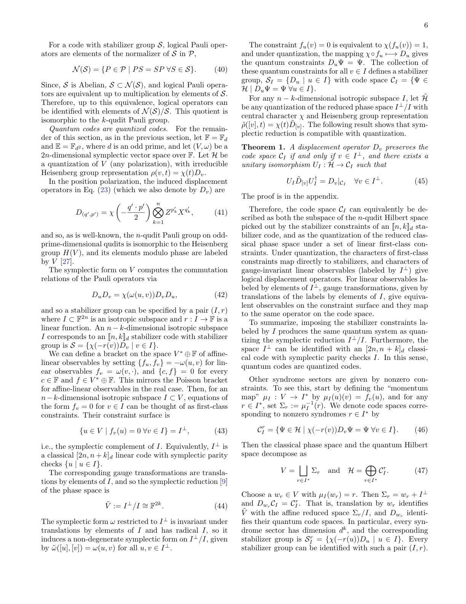
Summary. This paper constructs a discrete analogue of geometric quantization applicable to finite fields. It shows that quantum error-correcting codes can be understood as the quantization of classical constraints defined on a symplectic vector space. This establishes a rigorous, physical interpretation for the mathematical relationship between classical coding theory and quantum stabilizer codes.
Why it may be interesting. It provides a deep mathematical link between abstract algebraic structures (symplectic geometry over finite fields) and the physical realization of quantum error correction codes, which is foundational to quantum computation theory.
Main problem. To develop a discrete analogue of geometric quantization over finite fields, providing a physical interpretation for the correspondence between classical and quantum error-correcting codes.
Main result. The quantization procedure successfully maps classical constraints (defined by isotropic subspaces in a symplectic vector space over $\mathbb{F}_d$) to quantum stabilizer constraints, demonstrating that quantum codes are fundamentally quantized codes.
Method. The authors adapt geometric quantization techniques, originally for continuous symplectic manifolds, to the discrete setting of finite fields using displacement operators and polarization analogues.
Model / system. The model involves symplectic vector spaces $(V, \omega)$ over finite fields $\mathbb{F}_d$, relating classical linear codes (defined by constraints) to quantum stabilizer codes on $d$-dimensional qudits.
Key observables. Stabilizer constraints, logical Pauli operators, and the resulting code space dimension $[[n, k]]_d$.
Important parameters / regimes. The dimension $d$ of the qudit (often an odd prime), and the structure of the symplectic form $\omega$.
Assumptions / limitations. The analysis relies on establishing a discrete analogue of the Segal-Bargmann representation and assuming the compatibility of quantization with symplectic reduction.
Paper structure. The paper progresses by first reviewing continuous geometric quantization, then developing the discrete analogue over finite fields, and finally applying this framework to explicitly derive the structure of stabilizer codes from classical coding theory constraints.
We present a discrete analogue of geometric quantization over finite fields which, when applied to certain classical error-correcting codes, yields quantum error-correcting codes. This provides a physical interpretation for a previously known quantum-classical correspondence in coding theory.
Authors: Jinkang Guo, Yiqiu Han, Aranya Chakraborty, Shubham P. Jain, Tianhao Liu, Victor V. Albert, Andrew Lucas
Type: theory · Category: quantum information and computing · PDF: https://arxiv.org/pdf/2610.04834v1
Analysis basis: full PDF text, analyzed in chunks
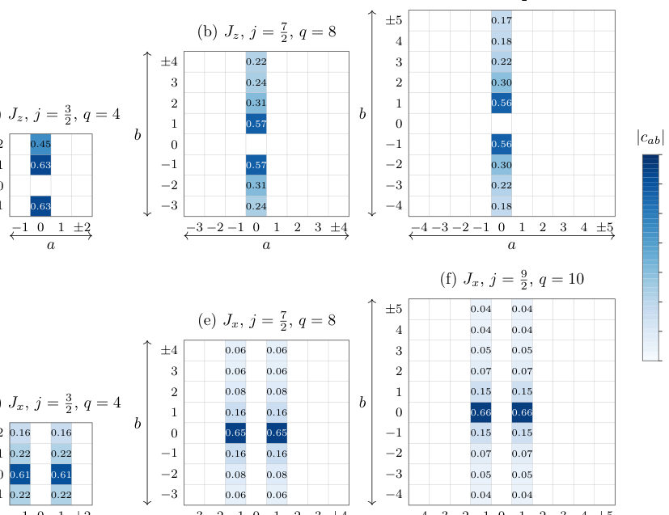
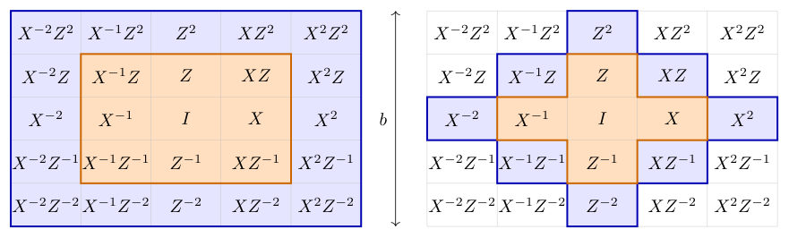
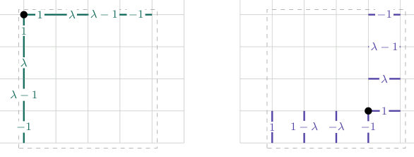
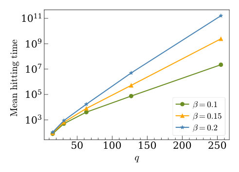
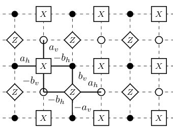
Summary. This paper introduces a quantum coding theory framework for qudits designed to combat discrete small-shift noise, utilizing the Lee metric instead of the standard Hamming metric. It develops mathematical tools to analyze stabilizer codes under this metric, showing potential advantages in qubit count and establishing fundamental bounds on achievable code distances. The work advances the theory of fault-tolerant quantum computation by incorporating realistic noise models.
Why it may be interesting. The work directly tackles advanced topics in quantum error correction by incorporating a physically motivated, non-uniform error model (the Lee metric) into the theory of qudit codes, which is highly relevant to understanding realistic noise in quantum hardware.
Main problem. The paper develops a quantum coding framework to address noise modeled by discrete small-shift Pauli errors (X and Z shifts) in qudit systems, moving beyond standard assumptions of equally likely errors.
Main result. It establishes that the joint Lee metric can yield qubit codes with fewer physical qubits than Hamming metric codes, and it proves an obstruction showing the Lee distance for qudit LDPC codes is bounded by $O(n)$.
Method. The authors develop a formalism for stabilizer codes over $\mathbb{Z}_q$ using joint and separate Lee metrics, analyzing error spreading under Clifford gates and employing techniques like the Gray map for qubitization.
Model / system. The system involves qudits (systems with $q$ levels) subjected to noise modeled by low-weight X- and Z-type Pauli shifts. The theoretical framework is built around generalizing classical Lee-metric coding theory to the quantum domain.
Key observables. Lee distance, code distance, error spread ($ ext{w}_B(U)$), and memory times for classical codes.
Important parameters / regimes. The qudit dimension $q$, the system size $n$, and the temperature $T$ (for classical dynamics).
Assumptions / limitations. The primary assumption is that the noise structure is governed by the Lee metric, which weights errors based on the total size of X and Z shifts, rather than assuming all Pauli shifts are equally likely.
Paper structure. The paper systematically introduces the Lee metric for qudits, develops the formalism for stabilizer codes using joint/separate metrics, analyzes specific constructions (e.g., qubitization, LDPC codes), and concludes with discussions on classical analogues and open questions.
We introduce a quantum coding framework for discrete small-shift noise, in which errors on qudits are modeled as low-weight $X$- and $Z$-type Pauli shifts, analogous to small phase-space displacements in continuous-variable systems. This structure is approximately respected by nuclear-spin noise and captured by the Lee metric, motivating a quantum extension of classical Lee-metric coding theory. We develop such a formalism for stabilizer codes over $\mathbb{Z}_q$ for arbitrary $q$, using joint and separate Lee metrics for the $X$- and $Z$-components of errors. For qubits, the joint metric counts $Y$ errors twice and can yield codes that detect and correct $X$ and $Z$ errors with fewer physical qubits than codes designed for the conventional Hamming metric. We discuss Lee-weight spreading under Clifford gates and qubitize codes over $\mathbb{Z}_4$ via the Gray map, finding codes with two-fold transversal non-qubit-Clifford gates. For quantum CSS Lee-LDPC codes on $n$ qudits, we prove that the Lee distance cannot exceed $O(n)$, uniformly in $q$, demonstrating an unexpected obstruction to using the large internal Hilbert space of a large-$q$ qudit to make high-Lee-distance codes. Under local Metropolis dynamics, certain classical $q$-ary ``helical repetition codes'' have exponentially long memory times at fixed temperature for sufficiently large $q$ (that grows with system length), which can be understood as spontaneous symmetry breaking at finite temperature, even in local one-dimensional models. Hypergraph products of these helical repetition codes provide local two-dimensional quantum codes that inherit self-correction for $Z$ errors, but self-correction for $X$ errors remains an open question.
Authors: Pablo Herrero Gómez, Antonio Jimeno Morenilla, David Muñoz-Hernández, Higinio Mora Mora
Type: theory · Category: quantum information and computing · PDF: https://arxiv.org/pdf/2610.06076v1
Analysis basis: full PDF text, analyzed in chunks
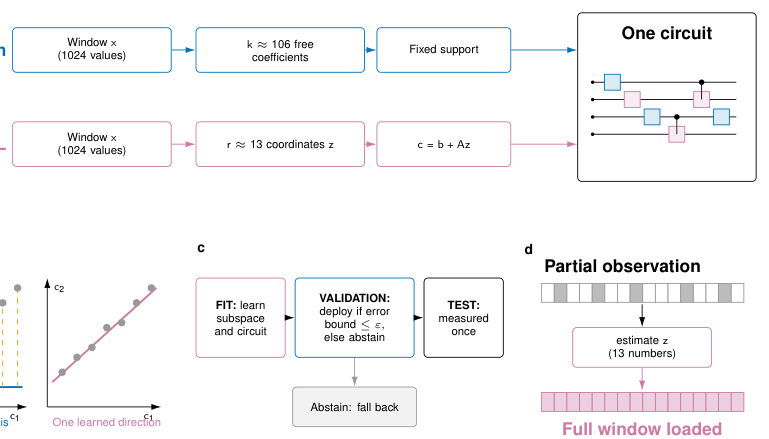
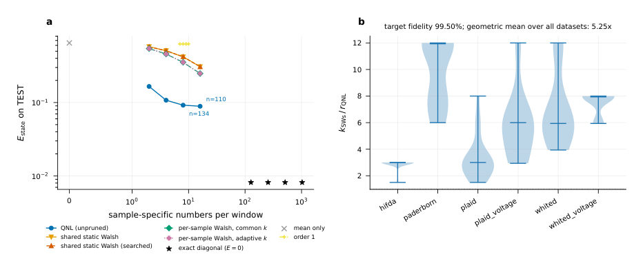
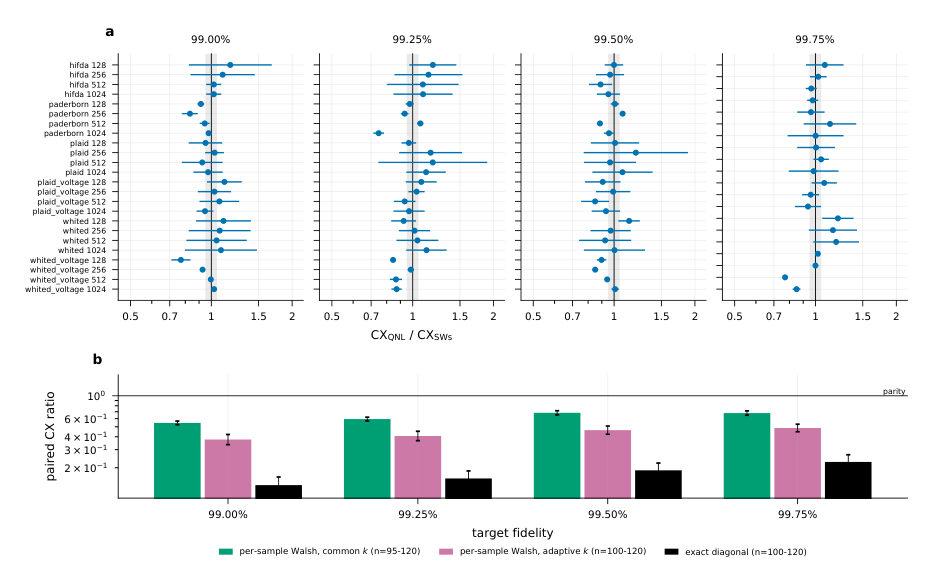
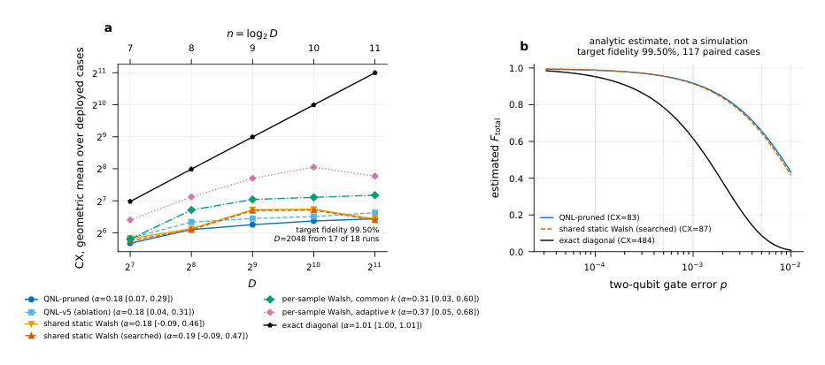
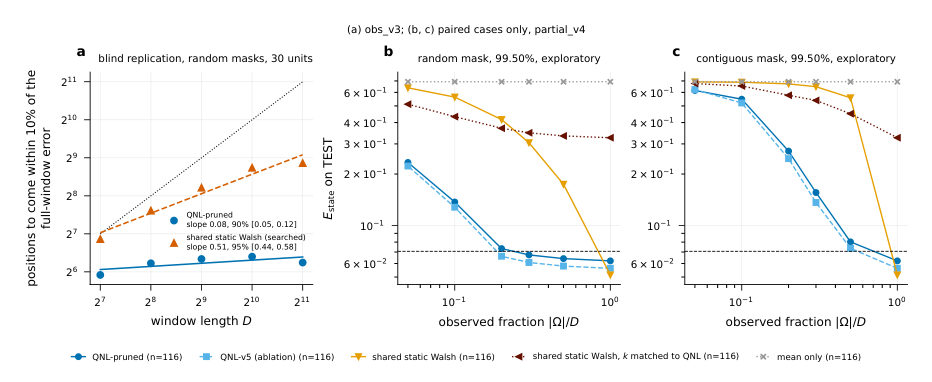
Summary. This paper introduces a quantum-native loader (QNL) designed to efficiently prepare quantum states from classical data by exploiting the shared underlying structure of real-world signals. By learning a low-dimensional representation, QNL requires far fewer input parameters than existing methods, demonstrating superior scalability and resource efficiency for quantum data encoding tasks.
Why it may be interesting. While focused on data loading rather than Hamiltonian simulation, the concept of learning a low-dimensional manifold to parameterize complex quantum operations is highly relevant for efficient quantum circuit design and resource estimation in quantum simulation.
Main problem. The primary challenge addressed is the high cost of preparing quantum states from classical data, which can negate any potential quantum speed-up.
Main result. The proposed quantum-native loader (QNL) significantly outperforms established structured loading methods by requiring a constant, small number of input parameters regardless of the signal size, while maintaining high fidelity.
Method. The method learns a low-dimensional, shared structure (manifold) from the entire dataset, allowing it to prepare any new signal using a single, fixed quantum circuit topology parameterized by a few inferred coordinates.
Model / system. The system involves encoding real-world time-series signals (like ECG) into quantum states using a fixed circuit structure derived from a learned shared basis, contrasting with per-sample circuit tailoring.
Key observables. State-preparation error ($ ext{Estate}$), the number of required input coordinates/coefficients ($r$), and the two-qubit gate count (CX cost) needed to achieve target fidelities.
Important parameters / regimes. Target fidelities (e.g., 99.50%), signal dimension ($D$), and the scaling exponent ($\alpha$) describing resource growth with dimension.
Assumptions / limitations. The core assumption is that the source of the real signals occupies a low-dimensional family that is simultaneously statistical and physical, allowing for effective structure learning.
Figures summary. Figures compare the loading pipeline, showing QNL vs. shared Walsh support. They also compare error rates and resource requirements (like CX ratio) across varying sample sizes and fidelities.
Paper structure. The paper introduces the QNL approach, details the offline learning (fitting an affine decoder) and online inference process, and rigorously compares its performance against state-of-the-art structured loaders across multiple datasets and scaling regimes.
Preparing quantum states from classical data can cost more than the computation they serve; most loaders tailor a circuit to each input. Here we show that the signals of a real dataset share structure that can be learned once and reused. Our quantum-native loader learns a low-dimensional description of a dataset and prepares every signal with one fixed circuit set by a few numbers. Across seven views of five public datasets it meets the targets of the strongest structured loader at equal gate cost with several times fewer numbers per signal. These numbers can be inferred from a random subset: in a preregistered blind replication the subset needed to come within ten per cent of full-signal accuracy stayed constant within a prespecified margin as signals grew sixteenfold, whereas the structured loader needed ever more. It declines what it cannot represent, covering fewer cases than that baseline and no electrocardiogram.
Authors: Bartosz Regula, Ludovico Lami, Mario Berta, Marco Tomamichel
Type: theory · Category: quantum information and computing · PDF: https://arxiv.org/pdf/2610.06842v1
Analysis basis: full PDF text, analyzed in chunks
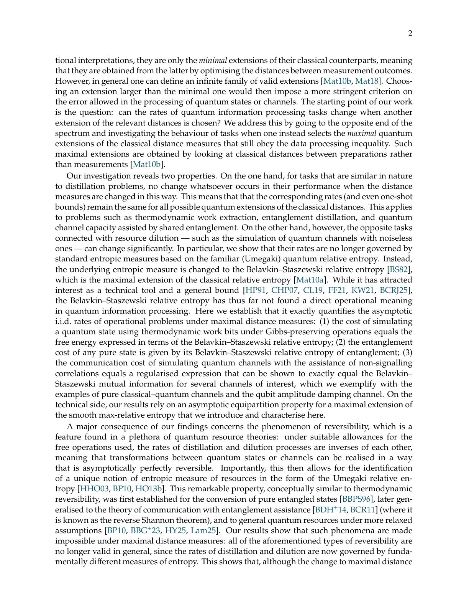
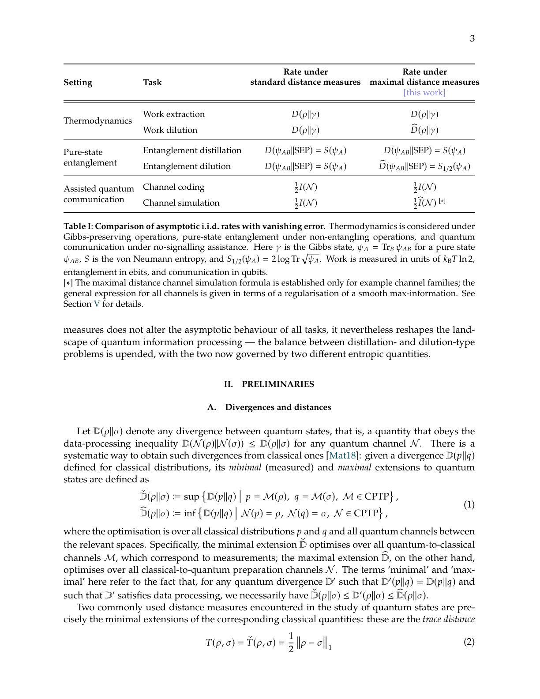
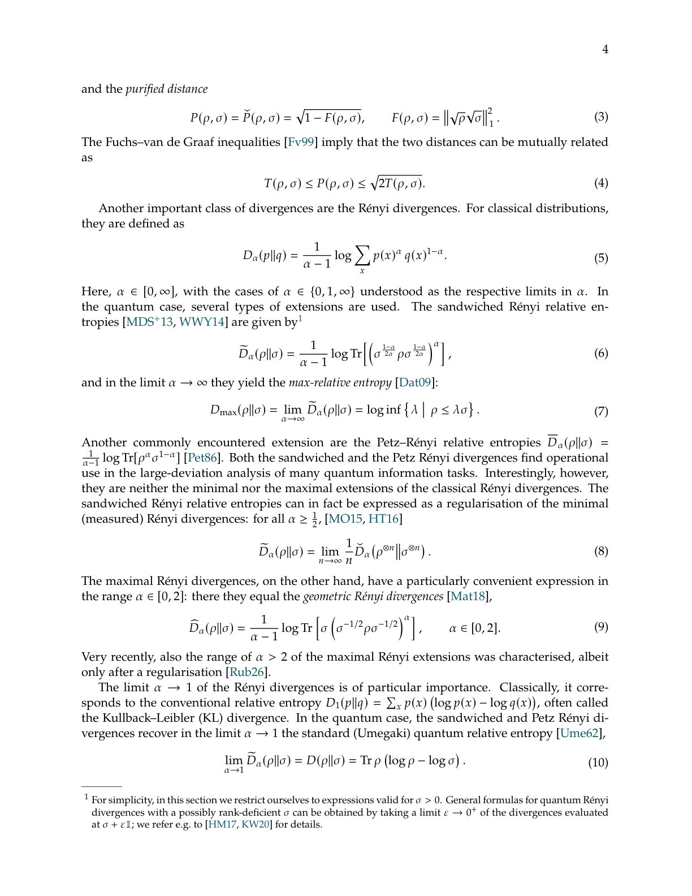
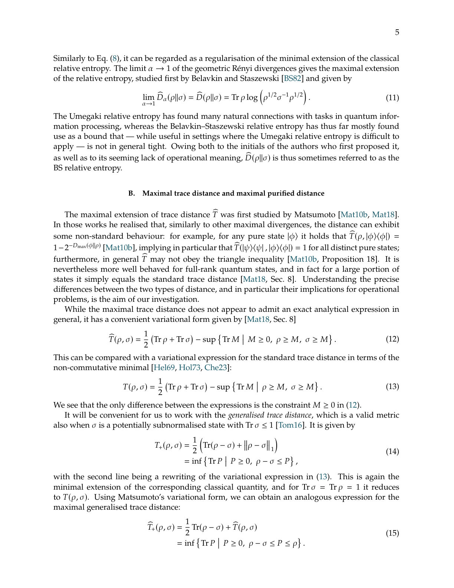
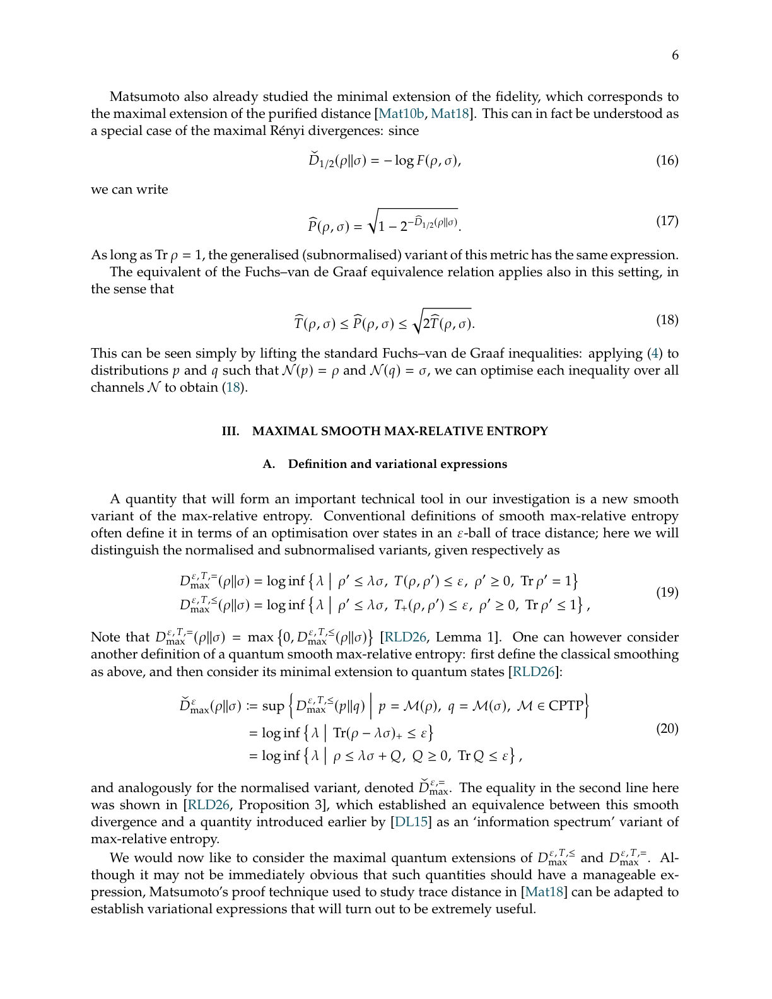
Summary. This work explores the consequences of using 'maximal' error metrics instead of standard ones in quantum information theory. It demonstrates that while some quantum tasks remain robust to this change, others adopt new rate functions based on the Belavkin-Staszewski relative entropy. Crucially, this shift invalidates several established reversibility theorems in the field.
Why it may be interesting. The findings redefine the fundamental quantitative measures of resource costs in quantum information, suggesting that standard theorems relying on simple divergence measures may fail when considering the most general operational constraints.
Main problem. The paper investigates how changing the error metrics used in quantum information processing tasks, from standard minimal extensions to maximal extensions of classical divergences, affects task performance.
Main result. While some tasks (like distillation) are unaffected, others (like channel simulation) are governed by the Belavkin-Staszewski relative entropy, leading to the breakdown of known reversibility theorems.
Method. The authors compare minimal and maximal extensions of classical divergences, utilizing asymptotic i.i.d. limits to calculate task rates and characterizing the variational forms of these maximal divergences.
Model / system. The analysis applies to general quantum information processing tasks, including channel coding, quantum resource distillation, channel simulation, and quantum resource dilution, using quantum states and quantum channels as the core model.
Key observables. Asymptotic i.i.d. rates for various tasks, the Belavkin-Staszewski relative entropy, and various maximal divergences ($bT, bP, D_{\max}$).
Important parameters / regimes. The choice of error metric (minimal vs. maximal extension) and the specific type of quantum resource transformation being analyzed.
Assumptions / limitations. The maximal extensions are defined by optimizing over all classical distributions and quantum channels; the analysis often requires restricting to Resource-Non-Generating (RNG) operations in resource theories.
Figures summary. Table I compares asymptotic i.i.d. rates for three task types under standard versus maximal distance measures.
Paper structure. The paper first establishes the framework by comparing minimal and maximal extensions of divergences. It then analyzes specific tasks (distillation vs. dilution) to show the dependence on the entropy measure. Finally, it extends this to general resource theories and analyzes additivity properties of information measures.
The measures of distance frequently used in quantum information, such as trace distance or fidelity-based purified distance, are the smallest extensions of the corresponding distance measures in classical information theory. However, this way of extending classical distances is not unique, and a whole spectrum of other extensions can be defined. Here we study the question of how quantum information processing tasks are affected by a change of the error metrics to the maximal extensions of the classical distance measures, imposing more demanding error requirements on operational tasks. We find that the performance of some tasks, such as channel coding or quantum resource distillation, is not affected whatsoever by this change. However, for other tasks such as channel simulation and quantum resource dilution, we show that the rates are now given not by functions of the standard (Umegaki) quantum relative entropy, but ones based on the Belavkin-Staszewski relative entropy. Our results connect the Belavkin-Staszewski relative entropy with operational tasks and reveal that known reversibility results in quantum information, including the reverse Shannon theorem and the asymptotic reversibility of quantum resource transformations, no longer hold under maximal distance measures.
Authors: Patrick Hayden, Alexander Maloney, Jinzhao Wang, Yuxiang Yang
Type: theory · Category: quantum information and computing · PDF: https://arxiv.org/pdf/2610.06742v1
Analysis basis: full PDF text, analyzed in chunks
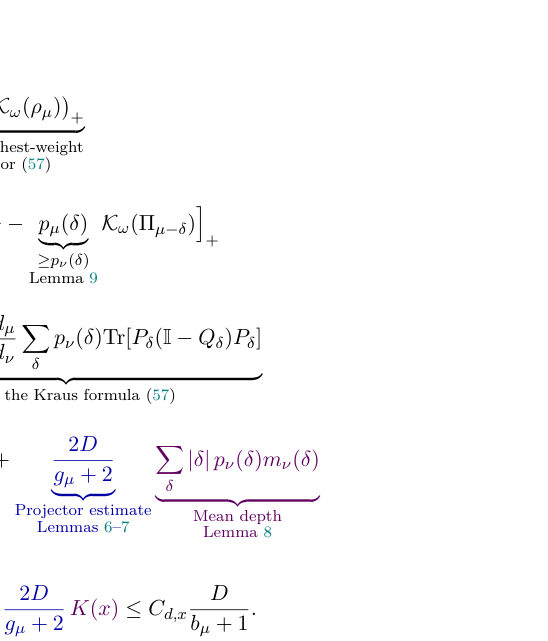
Summary. This paper calculates the quantum minimum description length for compressing density matrices when only the spectrum is known, not the eigenbasis. It establishes both the achievable rate and the fundamental lower bound using advanced tools from representation theory and information theory. This provides a precise measure of the coding overhead required for quantum state estimation and compression.
Why it may be interesting. The work provides rigorous, quantitative bounds on the fundamental limits of quantum data compression, which underpins resource theories and quantum communication protocols.
Main problem. The paper determines the quantum minimum description length (QMDL) for compressing many copies of a density matrix when the spectrum is known but the eigenbasis is unknown, extending Schumacher compression.
Main result. The optimal memory cost is explicitly determined by a formula involving the dimension and eigenvalue differences, quantifying the coding overhead above standard entropy.
Method. The analysis uses generalizations of Werner's cloning map for irreducible representations and relies on a quantitative form of Koashi–Imoto incompressibility for the converse bound.
Model / system. The system involves density matrices ($ ho$) in dimension $d$, analyzed in the context of compressing multiple copies ($ ho^{\otimes n}$) where the state is defined by its spectrum $\mathbf{x}$ and an unknown unitary transformation $U(g)$.
Key observables. Quantum Minimum Description Length (QMDL), achievable memory size $|M_n|$, and the trace-distance error $\delta_n$.
Important parameters / regimes. Fixed dimension $d$ and a fixed spectrum $\mathbf{x}$ with distinct positive eigenvalues.
Assumptions / limitations. The results assume a spectral-gap condition for the converse bound and concern the asymptotic behavior for fixed parameters.
Figures summary. No specific figure summaries were provided, but the text references mathematical equations and theorems detailing the cost and achievability.
Paper structure. The paper develops the theory by first establishing the optimal cost (Theorem 1) using generalized cloning maps for achievability, and then deriving the matching converse using incompressibility bounds.
We study a variant of Schumacher compression. The task asks for the minimal memory cost for compressing many copies of a density matrix with known spectrum and unknown eigenbasis, without preserving its purification. For fixed dimension and distinct positive eigenvalues, we obtain the cost through its additive constant. Achievability uses a generalization of Werner's cloning map to $\mathrm{GL}(d,\mathbb C)$ irreducible representations, with finite trace-distance bounds controlled by highest-weight differences and row gaps. The matching converse follows from a quantitative form of Koashi--Imoto incompressibility for irreducible group orbits under a spectral-gap assumption. We also identify the relation between this quantum minimum description length and universal lossless coding overhead, and its connection to free entropy is explained in a companion letter. We provide a Lean certificate for our proofs.
Authors: Justin Roy Cox, Neil Epstein, Zhirui Hu, Michael Jarret, Thomas De Mastri
Type: theory · Category: quantum information and computing · PDF: https://arxiv.org/pdf/2610.03914v1
Analysis basis: full PDF text, analyzed in chunks
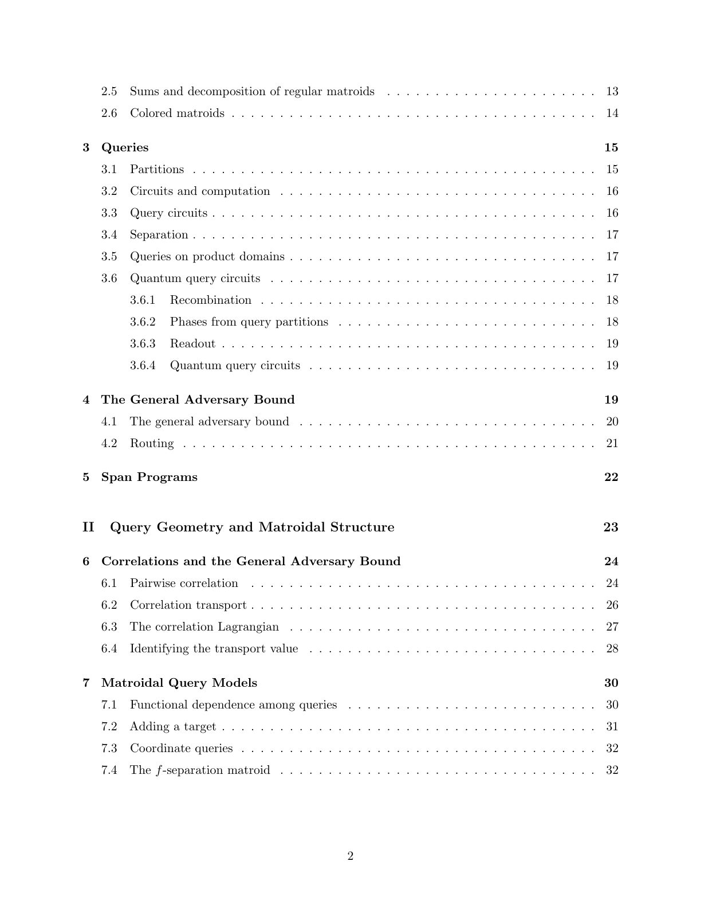
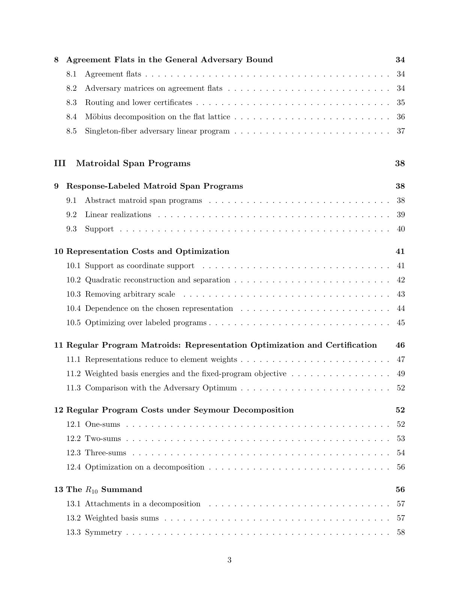
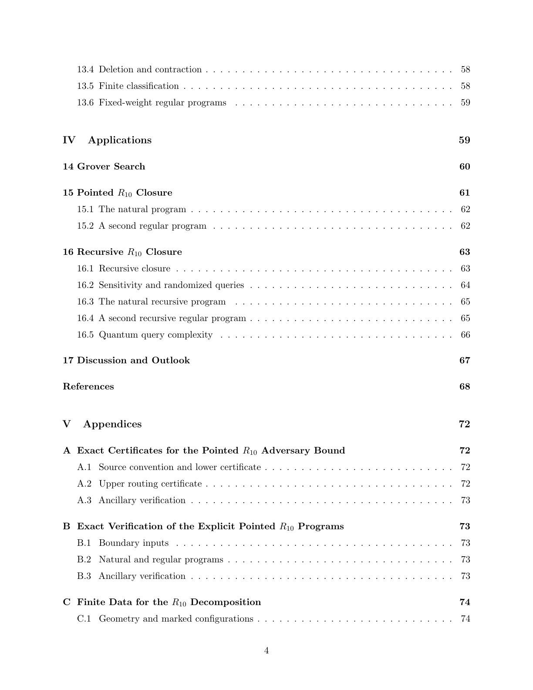
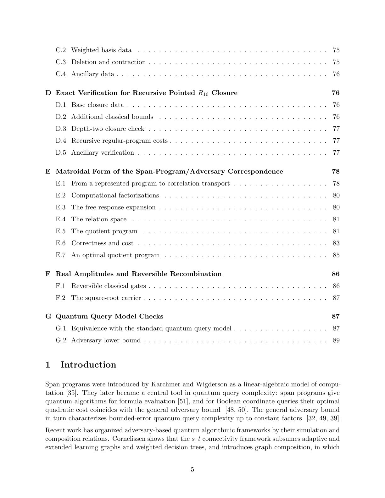
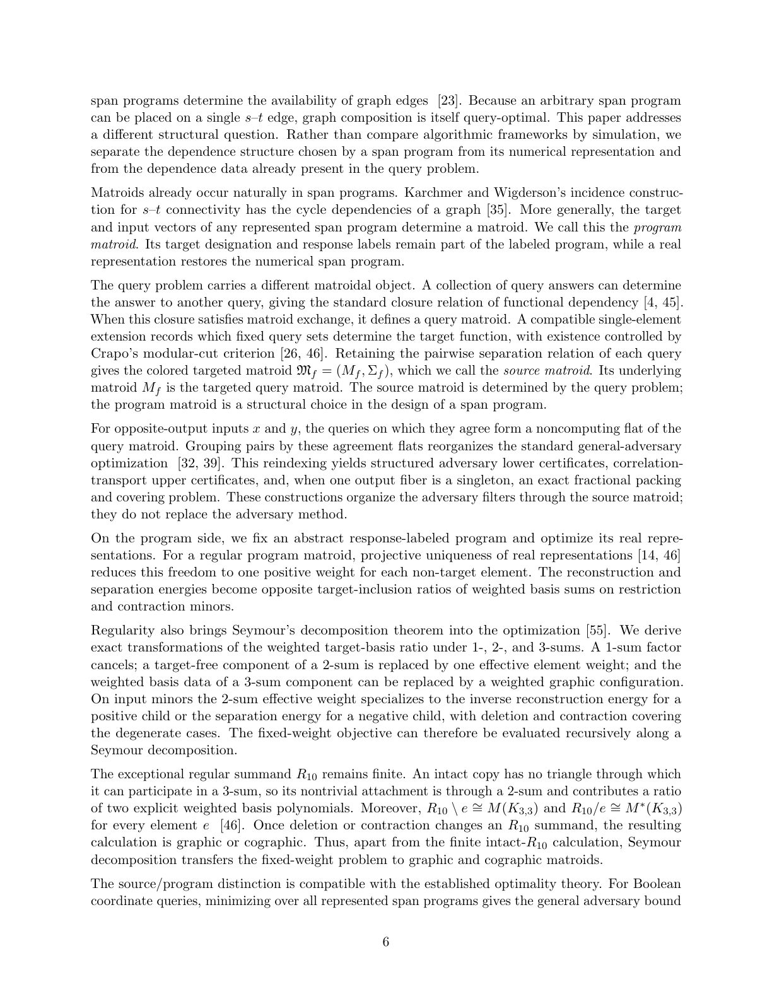
Summary. This theoretical paper introduces a novel matroidal framework to analyze quantum query algorithms using span programs. It successfully separates the inherent query dependence from the algorithmic structure, leading to rigorous proofs that equate the optimal query cost to the general adversary bound for binary queries. This provides deep mathematical insight into the fundamental limits of quantum computation.
Why it may be interesting. While highly abstract, the rigorous mathematical connection between combinatorial optimization (matroids) and the fundamental limits of quantum computation (query complexity) provides powerful new tools for analyzing quantum algorithms.
Main problem. The paper develops a general framework using matroids to design and analyze quantum query algorithms, aiming to relate the optimal query cost to the general adversary bound.
Main result. For separating binary query sets, the global matroid-span-program optimum is shown to equal the quantum adversary bound, and explicit asymptotic bounds are derived for complex query problems.
Method. The core method involves developing a matroidal organization that separates query dependence (source matroid) from program structure dependence (program matroid), allowing for compositional evaluation using Seymour decomposition.
Model / system. The study focuses on quantum query models, specifically using 'span programs' as a general algorithmic framework. The mathematical machinery heavily relies on Matroid Theory to characterize the constraints imposed by the query problem.
Key observables. Quantum query complexity ($ ext{Adv}_{\pm}Q(f)$), minimum span-program complexity ($ ext{MSP}(f, \mathfrak{M}_f)$), and various derived asymptotic exponents ($\alpha$).
Important parameters / regimes. The input size $N$, the error parameter $\epsilon$, and the structure of the query function $f$.
Assumptions / limitations. The analysis builds upon the existence of source and program matroids, and for certain cases, assumes the applicability of the partition-based quantum query model.
Figures summary. The notes reference equations detailing the equivalence between the partition-based query model and the standard response-oracle model, and the steps for deriving the adversary lower bound.
Paper structure. The paper is highly theoretical, structured around applying Matroid Theory to Quantum Query Models. It moves from defining the general span program framework to establishing the source/program matroid separation, and finally deriving concrete bounds and asymptotic results for specific query types.
Span programs provide a general method for designing quantum query algorithms, and for Boolean coordinate queries their optimum cost agrees with the general adversary bound. We develop a matroidal organization of this optimization that separates dependence data determined by the query problem from the dependence structure chosen by a span program. The resulting source matroid records query dependence, target determination, and separation data, while a program matroid records dependencies among the target and response-labeled input elements of a candidate program. When a query problem admits a source matroid, we use its structure to organize adversary upper and lower bounds. For separating binary query sets in this setting, the global matroid-span-program optimum equals $\mathrm{Adv}^{\pm}_{\mathcal Q}(f)$. For a fixed regular program matroid, projective uniqueness reduces optimization over real representations to positive element weights. We express positive and negative costs as weighted basis ratios and derive exact $1$-, $2$-, and $3$-sum reductions, giving a compositional evaluation of the fixed-weight objective along a Seymour decomposition. For pointed $R_{10}$ closure, exact certificates give $3.9087553<\mathrm{Adv}^{\pm}_{\mathcal Q_R}(f_R)<3.9301$. The natural $R_{10}$ program has optimized cost $5$, while another regular program has cost at most $\sqrt{87/5}$. Recursive self-composition yields a family on $N$ input bits with randomized query complexity $Ω(N^{0.7324867\ldots})$, an explicit quantum algorithm using $O(N^{0.6500178\ldots})$ queries, and $Q(F)=Θ(N^α)$ for $0.6204277\ldots<α<0.6229063\ldots$.
Authors: Yonggang Jiang, Xiaoming Sun, Penghui Yao, Zekun Ye, Jialin Zhang, Zhijie Zhang
Type: theory · Category: quantum information and computing · PDF: https://arxiv.org/pdf/2610.04560v1
Analysis basis: full PDF text, analyzed in chunks
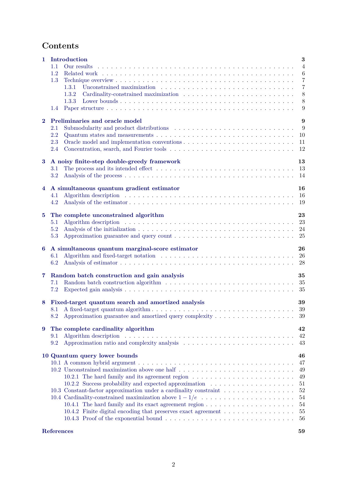
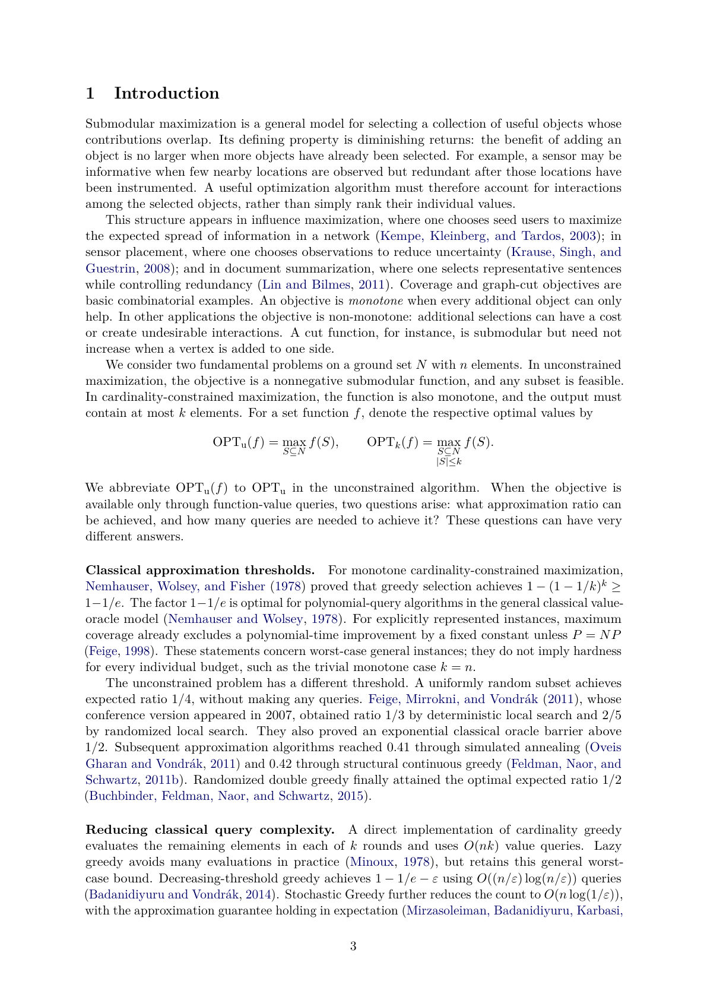
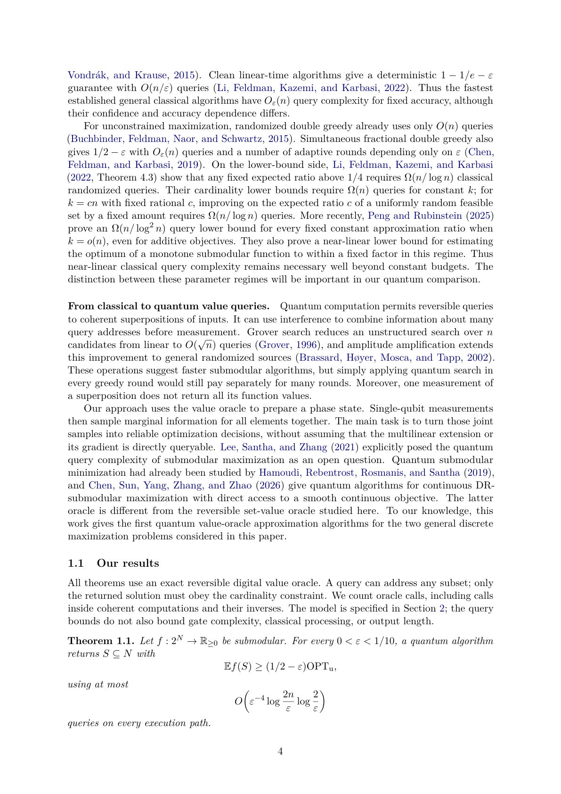
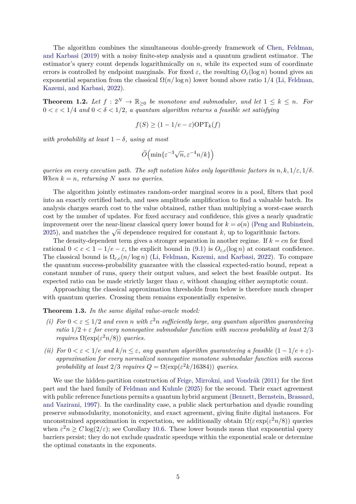
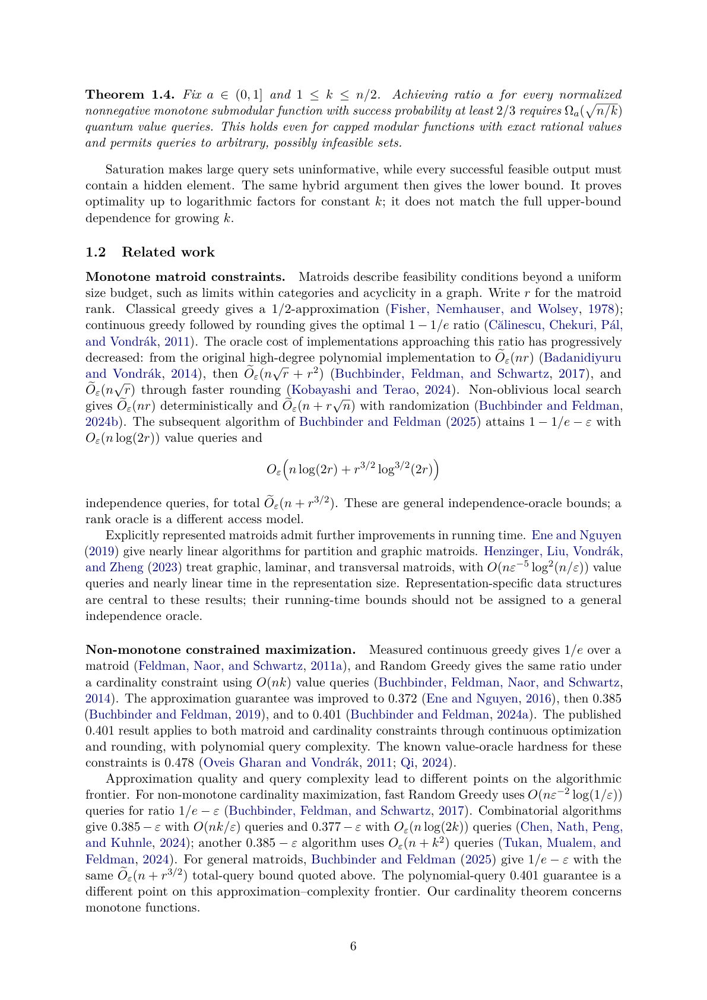
Summary. This paper analyzes the quantum query complexity for maximizing submodular functions, both without and with a cardinality constraint. It achieves significant query speedups over classical randomized algorithms, proving an exponential separation in complexity in certain regimes. The results establish fundamental quantum lower bounds, defining the limits of quantum speedup for this class of optimization problems.
Why it may be interesting. The work provides concrete examples of quantum advantage in combinatorial optimization problems, which is a key area linking quantum computation theory to practical algorithms.
Main problem. The paper studies the quantum query complexity of maximizing a non-negative submodular function, considering both unconstrained and cardinality-constrained settings.
Main result. It establishes an exponential separation between quantum and classical query complexities for submodular maximization, achieving polynomial query bounds where classical algorithms require super-polynomial ones.
Method. The authors develop quantum algorithms utilizing the exact reversible digital value-oracle model, employing techniques like quantum gradient estimation and amplitude amplification.
Model / system. The analysis is performed within the exact reversible digital value-oracle model, which allows querying the value of any subset of an $n$-element ground set.
Key observables. Approximation ratios (e.g., $(1/2-\epsilon)$ or $(1-1/e-\epsilon)$) and query complexity (number of oracle calls).
Important parameters / regimes. The size of the ground set ($n$), the cardinality constraint ($k$), and the desired approximation error ($\epsilon$).
Assumptions / limitations. The analysis relies on the 'exact reversible digital value-oracle model,' and the lower bounds establish barriers where no exponential speedup is possible.
Paper structure. The paper develops the quantum algorithms first, followed by the rigorous proof of corresponding quantum lower bounds, demonstrating the complexity barriers.
We study the quantum query complexity of maximizing a non-negative submodular function, considering both the unconstrained setting and, for monotone functions, a cardinality constraint $k$ on an $n$-element ground set. In the exact reversible digital value-oracle model, our unconstrained algorithm achieves an expected $(1/2-\varepsilon)$-approximation using only $O_\varepsilon(\log n)$ queries. In contrast, any classical randomized algorithm that attains a fixed expected ratio above $1/4$ requires $Ω(n/\log n)$ queries (Li, Feldman, Kazemi, and Karbasi, 2022), establishing an exponential separation in query complexity. For cardinality-constrained maximization, we give a bounded-error quantum algorithm that achieves a $(1-1/e-\varepsilon)$-approximation using $\widetilde O_\varepsilon(\min\{\sqrt n,n/k\})$ queries. When $k=o(n)$, our algorithm achieves at least a quadratic speedup up to logarithmic factors over classical randomized algorithms (Mirzasoleiman, Badanidiyuru, Karbasi, Vondrák, and Krause, 2015; Peng and Rubinstein, 2025). Moreover, when $k=cn$ for any fixed rational $c<1-1/e-\varepsilon$, the query complexity reduces to $O_{\varepsilon,c}(\log n)$, yielding an exponential separation from the classical $Ω(n/\log n)$ lower bound (Li, Feldman, Kazemi, and Karbasi, 2022). We further prove quantum lower bounds of $\exp(Ω(\varepsilon^2n))$ queries for achieving a ratio beyond $1/2+\varepsilon$ without constraints, and $\exp(Ω(\varepsilon^2k))$ queries for exceeding $1-1/e+\varepsilon$ when $k/n\le\varepsilon$. These barriers demonstrate that quantum computation offers no exponential speedup at these approximation thresholds.
Authors: Arpit Dua, Adam Holmes, Michael J. Gullans, Victor V. Albert
Type: theory · Category: quantum information and computing · PDF: https://arxiv.org/pdf/2610.06730v1
Analysis basis: full PDF text, analyzed in chunks
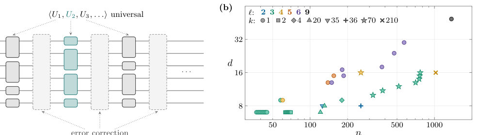
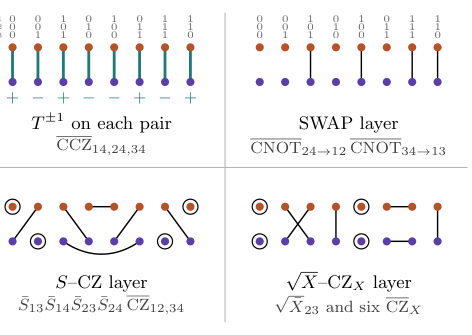
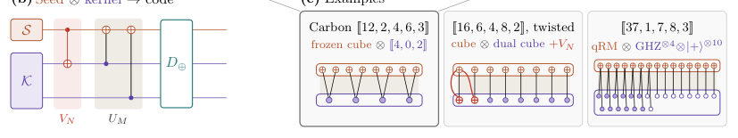
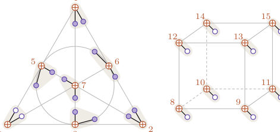
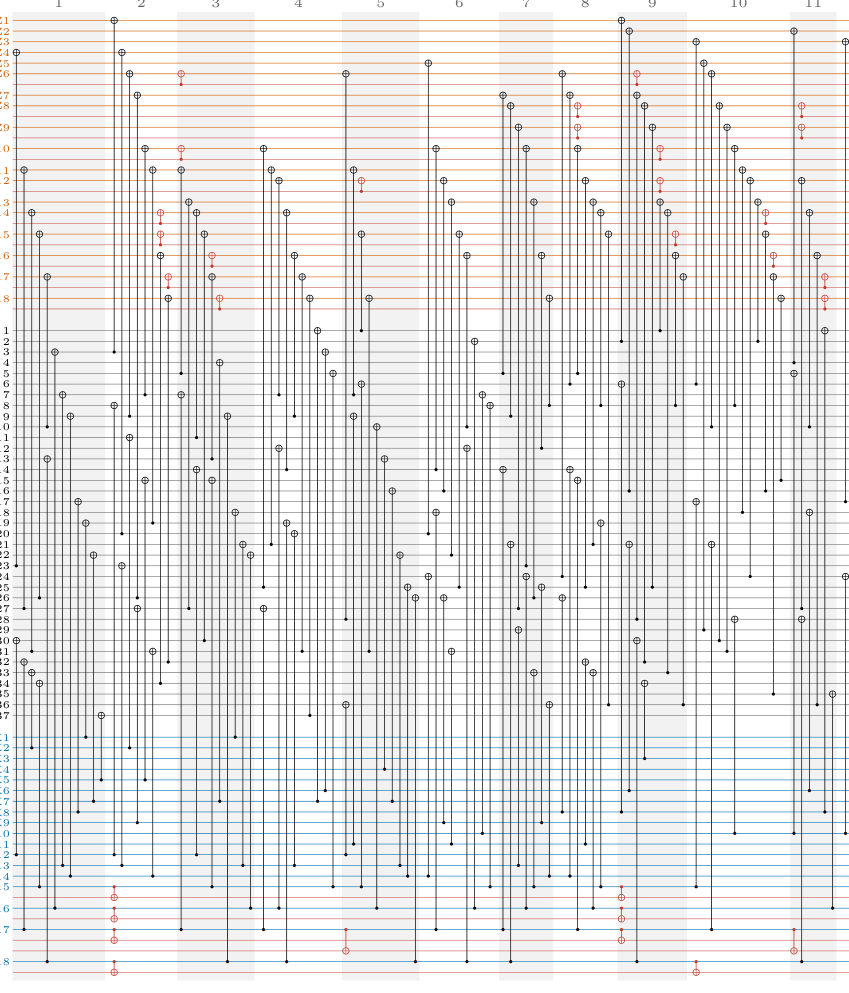
Summary. This paper develops methods to achieve universal gate sets for quantum computation by utilizing depth-one layers of few-qubit gates, circumventing constraints from the Eastin-Knill theorem. The authors construct numerous suitable codes using a seed-kernel coupling technique and rigorously analyze the fault-tolerance and circuit depth of these systems. This work provides significant theoretical blueprints for building scalable, fault-tolerant quantum processors.
Why it may be interesting. The rigorous construction of universal gate sets using only depth-one layers is a major theoretical advance for fault-tolerant quantum computation, providing concrete pathways around known theoretical limitations.
Main problem. The paper addresses the limitations imposed by the Eastin-Knill theorem, which restricts universal transversal logical gates on single-error-detecting codes.
Main result. The authors demonstrate that a universal logical gate set can be generated using depth-one layers of few-qubit gates, each respecting a different qubit partition, without requiring complex gadgets.
Method. They construct these generators by coupling a lower-distance 'seed' code to an ancillary 'kernel' code using entangling circuits (Seed-Kernel Construction).
Model / system. The work focuses on Quantum Error-Correcting Codes (CSS codes) used for fault-tolerant quantum computation, analyzing specific constructions like the tesseract and Carbon codes.
Key observables. The construction yields 47 codes with depth-one generating sets, and the circuit distance ($d_{ ext{circ}}$) of the Q37 code was calculated to be 7.
Important parameters / regimes. The fault tolerance condition requires $d \geq 2\ell+1$ for $\ell$-fold transversal gates; error rates are analyzed based on gate error $p$.
Assumptions / limitations. The analysis often relies on a conservative fault model, and the simulation of failure probability uses heuristic decoders like the Tesseract decoder.
Figures summary. Figures illustrate the compilation of logical gates from depth-one layers (Figure 1), the general seed-kernel coupling framework (Figure 3), and the schematic structure of the Q37 extraction round (Figure 5).
Paper structure. The paper progresses from establishing the theoretical necessity of depth-one layers to constructing specific codes via seed-kernel coupling, and finally analyzing the circuit depth and failure probability of a concrete example like Q37.
The Eastin-Knill theorem rules out a universal set of transversal logical gates on any code that detects single-qubit errors. The theorem constrains one partition of the qubits at a time. We show that depth-one layers of few-qubit gates, each respecting its own partition, can together generate a universal logical gate set on an error-correcting code. Each logical gate generator is then a single depth-one layer followed by error correction of the same stabilizer code, with no magic-state distillation, code switching, gauge fixing, lattice surgery, or other gadgets. We show that such codes can be found by applying an entangling circuit to a lower-distance "seed" code admitting a depth-one non-Clifford gate and an appropriate "kernel" code. We construct 47 codes with depth-one generating sets that tolerate at least one faulty gate per layer, including a [[37,1,7]] and a [[59,1,9]] code, both of check weight at most eight.
Authors: Nadezhda Voronova
Type: theory · Category: quantum information and computing · PDF: https://arxiv.org/pdf/2610.06727v1
Analysis basis: full PDF text, analyzed in chunks
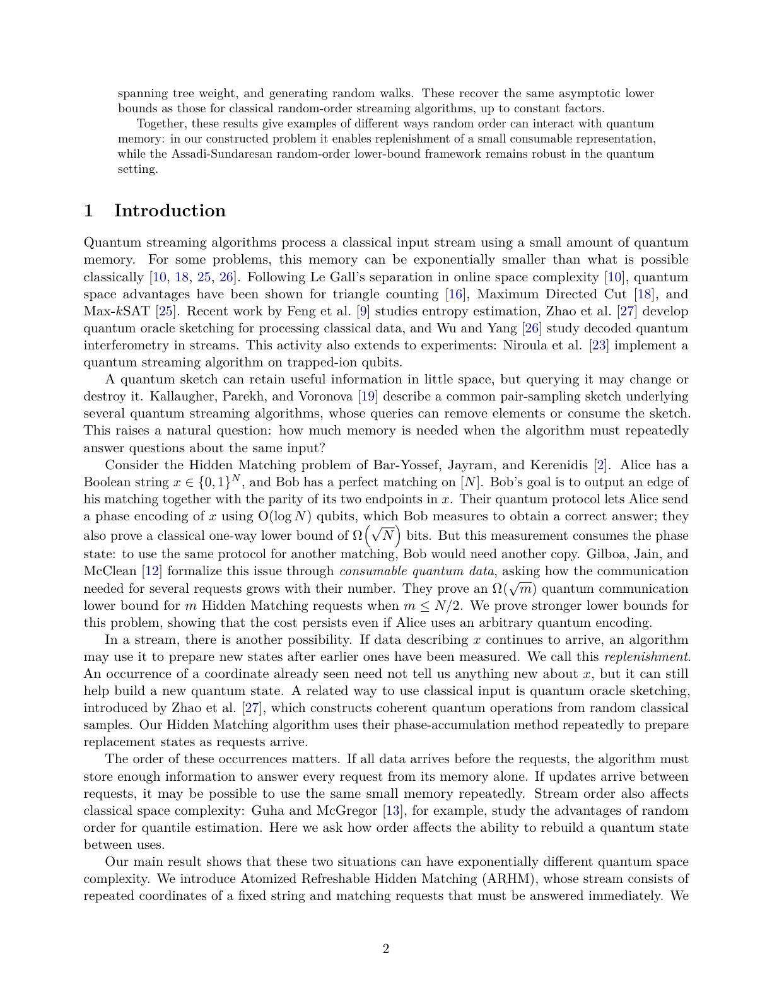
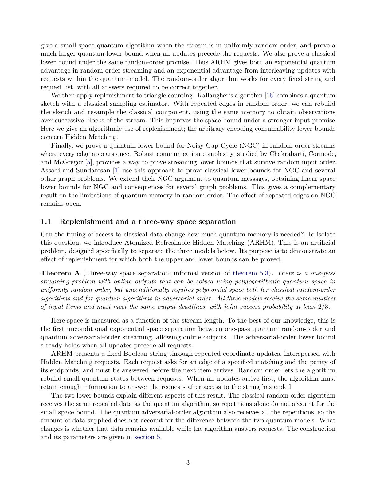
Summary. This work analyzes quantum streaming by determining how the random arrival order of data affects memory requirements. It shows that random order can allow for 'replenishment' of quantum information, leading to better space bounds for some tasks. However, it also establishes strong lower bounds proving that substantial quantum space is still needed for other complex graph problems.
Why it may be interesting. It provides rigorous theoretical tools for understanding the limits of quantum memory in data processing, which has implications for quantum communication protocols and resource management in quantum computation.
Main problem. The paper investigates how the random order of classical input data affects the required quantum memory resources in quantum streaming models, specifically focusing on the concept of 'replenishment'.
Main result. Random order can enable the replenishment of small quantum representations, allowing for polylogarithmic space algorithms for tasks like Hidden Matching, while robust lower bounds still enforce linear space requirements for certain graph problems.
Method. The authors use information-theoretic techniques, constructing artificial problems (like ARHM) and adapting lower-bound frameworks (like those for Noisy Gap Cycles) to establish space separations between random and adversarial input orders.
Model / system. The core model is quantum streaming, where classical data arrives sequentially, and the quantum memory must process queries while managing the 'consumability' of quantum states.
Key observables. Quantum space complexity (qubits required), success probability ($\epsilon$), and the ability to replenish consumed quantum information.
Important parameters / regimes. The ratio between random order vs. adversarial order; the number of independent requests ($r$); and the cycle length ($n$) for graph problems.
Assumptions / limitations. The analysis relies on establishing strong lower bounds for quantum communication complexity and assuming the existence of specific hard instances for graph problems.
Figures summary. Not specified, but the notes detail theoretical results concerning space separation and lower bounds for various graph problems.
Paper structure. The paper progresses by first establishing the concept of replenishment using Hidden Matching, then strengthening lower bounds via consumability arguments, followed by applying these techniques to Triangle Counting and the Noisy Gap Cycle problem.
How can random order change the role of quantum memory in streaming? Later classical input can restore the usefulness of a quantum state consumed by earlier queries. We call this replenishment. We construct an artificial problem based on Hidden Matching, with repeated coordinate data and online matching requests. It admits a one-pass quantum algorithm using polylogarithmic space in uniformly random order, but unconditionally requires polynomial space both classically in random order and quantumly when all updates precede the requests. To prove the quantum lower bound, we strengthen the consumability bounds of Gilboa, Jain, and McClean for Multiple Hidden Matching. Without prior entanglement, any quantum encoding supporting $r$ independent matching requests requires $Ω(r)$ qubits for $r\le N^{1/2-δ}$ and every fixed $δ\in(0,1/2)$, even with simultaneous revelation and arbitrary joint decoding. For sequential requests, the linear bound extends through $r=Θ(\sqrt N)$. We also adapt Kallaugher's triangle-counting algorithm to uniformly random streams in which every edge is repeated equally often. Rebuilding the quantum sketch and resampling the classical estimator improve its expected-space bound in suitable parameter regimes. Finally, we extend the robust Noisy Gap Cycle framework of Assadi and Sundaresan to quantum streaming. A quantum communication lower bound for Block Hidden XOR yields an $Ω(n)$ space lower bound in random edge order for large enough cycles, with consequences for several graph problems. Thus random order can enable replenishment of small quantum representations, while substantial space requirements persist for other tasks.
Authors: Andrew Huang, Akshar Ramkumar, John Wright
Type: theory · Category: quantum information and computing · PDF: https://arxiv.org/pdf/2610.06700v1
Analysis basis: full PDF text, analyzed in chunks
Summary. This paper proves that efficiently synthesizing arbitrary random unitaries using only access to a random oracle is impossible, establishing a superpolynomial query lower bound. It also resolves a related question by showing that scalable pseudorandom unitaries cannot be implemented efficiently in the ROM. The results place strong theoretical limits on what can be computed quantumly given limited access to randomness.
Why it may be interesting. This work establishes fundamental computational barriers for quantum algorithms, showing that achieving perfect randomness or universal unitary simulation requires resources (queries) that scale prohibitively with system size.
Main problem. The paper addresses the fundamental question of unitary synthesis: determining if any arbitrary unitary operation can be efficiently implemented using only access to a random classical function in superposition.
Main result. The authors prove a superpolynomial query lower bound for random-oracle unitary synthesis, establishing that it is impossible in the average-case model. They also show that scalable pseudorandom unitaries cannot be efficiently implemented beyond $O(N)$ queries.
Method. The analysis involves establishing lower bounds by analyzing the required number of queries ($k$) needed to achieve a certain fidelity ($\epsilon$) in approximating the target unitary, using techniques related to quantum information theory and complexity theory.
Model / system. The work is set in the Random Oracle Model (ROM) for quantum computation, focusing on the synthesis of Haar random unitaries. The system involves quantum circuits that query a random Boolean function $f$.
Key observables. The primary observables are the error $\epsilon$ in the synthesis approximation and the number of queries $k$ required by the algorithm.
Important parameters / regimes. The dimension $N=2^n$ (related to the Hilbert space size), the error $\epsilon$, and the query complexity $k$ are central parameters.
Assumptions / limitations. The impossibility result holds under the assumption that the error $\epsilon$ is bounded away from 1 by a $1/ ext{poly}(n)$ factor.
Paper structure. The paper first defines the unitary synthesis problem in the ROM, then presents the main theorem establishing the superpolynomial lower bound on queries. It follows this by settling the negative question regarding scalable PRUs, providing both lower and upper bounds on the required queries.
A major open problem in quantum complexity is the question of unitary synthesis---namely, is it possible to efficiently implement any unitary, given the ability to evaluate any classical function in superposition? Inspired by a recent work by Brakerski and Yuen (CRYPTO 2026), we propose an ``average-case'' unitary synthesis problem, which asks whether it is possible to efficiently implement a Haar random unitary given access to a random Boolean function. We then demonstrate a superpolynomial query lower bound, establishing that unitary synthesis in this model is impossible. Along with our main result, we settle in the negative a question Brakerski and Yuen pose, of whether scalable pseudorandom unitaries (PRUs) can be implemented in the ROM-PRU model. In particular, we show that in the ROM-PRU model, no $Ω(N^{1+γ})$ unitary design on $n$ qubits, where $N=2^n$, can be efficiently achieved for any $γ> 0$. On the other hand, we construct an $O(N)$-design in $\text{poly}(n)$ queries in the same model, surpassing the previously best known results which constructed $O(\sqrt{N})$-designs.
Authors: Thiago O. Maciel, Giancarlo Camilo, Allan Tosta, Daniel Stilck-França, Leandro Aolita, Thais de Lima Silva
Type: theory · Category: quantum information and computing · PDF: https://arxiv.org/pdf/2610.03885v1
Analysis basis: full PDF text, analyzed in chunks
Summary. This work develops a resource-aware methodology for Quantum Signal Processing (QSP) by quantifying the impact of multiple error sources, notably through the operator-Lipschitz constant $L_\star$. By optimizing polynomial coefficients based on a total error budget, the authors demonstrate a significant reduction in required quantum resources, such as T-gates, for tasks like molecular energy estimation.
Why it may be interesting. It provides a rigorous, resource-aware framework for designing quantum algorithms, directly addressing the practical limitations imposed by hardware noise and finite resources in quantum simulation.
Main problem. The paper analyzes the robustness of Quantum Signal Processing (QSP) and Quantum Singular-Value Transformation (QSVT) algorithms against multiple sources of algorithmic errors.
Main result. A resource-aware polynomial design procedure was developed that significantly reduces the modeled T-gate count (by 51.9%–56.7%) compared to standard analytical methods for ground state energy estimation.
Method. It establishes an end-to-end error budget incorporating function approximation, input operator error (governed by the operator-Lipschitz constant $L_\star$), and gate synthesis errors, optimizing polynomial coefficients to minimize total resource cost.
Model / system. The analysis is applied to implementing functions of operators, such as for ground state energy estimation using the $H_6$ molecular Hamiltonian, within the framework of the Linear Combination of Unitaries (LCU) model.
Key observables. Operator-Lipschitz constant ($L_\star$), total quantum-resource cost (T-gate count), and the three error components ($\varepsilon_{ ext{app}}, \varepsilon_{ ext{input}}, \varepsilon_{ ext{synth}}$).
Important parameters / regimes. Target total error budget, polynomial degree ($N$), and the specific Hamiltonian ($H_6$).
Assumptions / limitations. The analysis assumes the implemented function is operator-Lipschitz and relies on developing efficient classical algorithms to bound $L_\star$ and the resource cost.
Figures summary. Not specified, but the notes detail the derivation of error bounds and the comparison of resource costs.
Paper structure. The paper progresses by first defining the error sources and the role of $L_\star$, then developing algorithms to bound $L_\star$, and finally proposing a resource-aware polynomial design procedure that minimizes the total error budget for practical quantum simulations.
Quantum signal processing (QSP) realizes operator functions through polynomial transformations of a finite degree. In addition to function approximation errors, realistic implementations incur algorithmic errors also when encoding the input operator and in synthesizing gates into a discrete fault-tolerant gate set. We provide an end-to-end analysis of these errors and show that the input error propagation is governed by the operator-Lipschitz constant $L_\star$ of the implemented function. We then derive an efficient classical algorithm to compute tight lower and upper bounds on $L_\star$, and we show that these bounds induce in turn lower and upper bounds on the total quantum-resource cost (for instance, $T$-gate count) needed for QSP implementations compatible with a target total error. We further devise a procedure to search for a polynomial with minimum cost based solely on its coefficients, yielding a resource-aware polynomial-design procedure for QSP. We illustrate the resulting method for ground state energy estimation via eigenvalue thresholding for the H$_6$ molecular Hamiltonian. In the tested hardware profiles, the resource-aware family improves the total-error budget and reduces the modeled $T$-gate count by $51.9\%$--$56.7\%$ relative to the standard analytical polynomial obtained from an error-function approximation.
Authors: Yifei Qi, Rahul Sarkar
Type: theory · Category: quantum information and computing · PDF: https://arxiv.org/pdf/2610.06836v1
Analysis basis: full PDF text, analyzed in chunks
Summary. This paper characterizes when all gates in the Clifford hierarchy for a single qudit are semi-Clifford, proving this holds if and only if the qudit dimension $d$ is square-free. It develops sophisticated mathematical tools using module theory to distinguish between various gate classes ($ ext{SC}, ext{LSC}, ext{N}, ext{GSC}$) in composite dimensions.
Why it may be interesting. The work provides deep structural constraints on quantum gates, which is fundamental for understanding resource-efficient quantum computation protocols like gate teleportation.
Main problem. The paper investigates the necessary and sufficient conditions for all gates in the Clifford hierarchy of a single qudit to be semi-Clifford, particularly when the qudit dimension $d$ is composite.
Main result. The hierarchy gates are semi-Clifford if and only if the dimension $d$ is square-free; otherwise, various structural equivalences between gate classes (SC, LSC, N, GSC) fail.
Method. The authors extend results from prime dimensions to composite dimensions using advanced ring-theoretic tools, module theory over $\mathbb{Z}_d$, and analysis of symplectic modules.
Model / system. The system is a single qudit of dimension $d$, whose underlying mathematical structure is analyzed using the symplectic module $\mathbb{Z}_d^2$. The analysis involves classifying various types of quantum gates (Clifford, Semi-Clifford, etc.).
Key observables. The membership of gates in different structural classes ($ ext{SC}, ext{LSC}, ext{N}, ext{GSC}$) and the square-free nature of the dimension $d$.
Important parameters / regimes. The dimension $d$ (especially its prime factorization), and the level $k$ of the Clifford hierarchy ($C_k$).
Assumptions / limitations. The analysis requires using ring-theoretic substitutes for vector-space methods, which is necessary when $d$ is composite.
Figures summary. Figures summarize the relationships between the four types of gates ($ ext{SC}, ext{N}, ext{LSC}, ext{GSC}$) across different dimensions and hierarchy levels.
Paper structure. The paper first establishes the main theorem relating semi-Clifford property to square-free dimensions. It then delves into the mathematical machinery by analyzing Lagrangian submodules of the symplectic module $\mathbb{Z}_{2p^\alpha}^2$ to support the structural claims regarding gate equivalences.
An important question in quantum information theory asks whether every gate in the Clifford hierarchy is semi-Clifford or not, as such gates admit resource-efficient implementations via gate teleportation. Extending recent results for prime dimensions~\cite{silva_clifford_2025}, we prove that every hierarchy gate on a single qudit of dimension \(d\) is semi-Clifford, if and only if \(d\) is square-free. In composite dimensions, \(\mathbb{Z}_d^2\) is a symplectic module rather than a vector space, motivating a distinction between four types of gates. Semi-Clifford gates ($\mathcal{SC}$) are the ones that become diagonal under left and right multiplication by Clifford gates, while a broader class $\mathcal{N}$ admits a permutation diagonal form, under left and right multiplication by Cliffords. Lagrangian semi-Clifford gates ($\mathcal{LSC}$) conjugate some maximal abelian Pauli subgroup to another, whereas generalized semi-Clifford gates ($\mathcal{GSC}$) map some maximal abelian Pauli subalgebra to another under conjugation. In square-free dimensions, we have \(\mathcal{SC}=\mathcal{LSC}\) and \(\mathcal{N}=\mathcal{GSC}\), but when \(d\) is not square-free, these equivalences can fail, as Lagrangian submodules can become non-free. We also show that every third-level gate of the one-qudit Clifford hierarchy is a generalized semi-Clifford in arbitrary dimensions.
Authors: Sayam Sethi, Aditi Awasthi, Maxwell Poster, Joshua Viszlai, Jonathan Mark Baker
Type: theory · Category: quantum information and computing · PDF: https://arxiv.org/pdf/2610.06606v1
Analysis basis: full PDF text, analyzed in chunks
Summary. This paper introduces a novel, non-sampling predictor to calculate the leading term of the Logical Error Rate (LER) for Quantum Error Correcting codes. It overcomes the exponential computational barrier faced by traditional Monte Carlo methods, allowing for the efficient analysis of complex, deeply concatenated quantum codes. This tool is crucial for assessing the fault-tolerance limits of quantum computation.
Why it may be interesting. While focused on abstract QEC theory, the development of efficient, non-sampling analytical tools for error rate prediction is highly relevant to simulating complex quantum hardware noise models in AMO and quantum optics.
Main problem. The primary challenge is the computational intractability of estimating the Logical Error Rate (LER) for Quantum Error Correcting (QEC) codes, especially highly concatenated ones, using standard Monte Carlo sampling.
Main result. The authors propose a novel, non-sampling predictor that computes the leading monomial of the LER as a polynomial in the physical error rate $p$, achieving polynomial time complexity in code parameters and linear in the concatenation level $\ell$.
Method. The method involves deriving the leading term of the LER polynomial by analyzing the structure of error classes and utilizing a recursive approach for concatenated codes, avoiding explicit sampling.
Model / system. The system modeled is quantum computation protected by QEC codes, where errors are assumed to be independent Pauli errors on physical qubits. The complexity scales with the code distance $d$ and the number of concatenation levels $\ell$.
Key observables. Logical Error Rate (LER), the leading monomial $c p^o$ of the LER polynomial, and class likelihoods $W_\lambda(s)$.
Important parameters / regimes. Physical error rate ($p$), code distance ($d$), number of concatenation levels ($\ell$), and relative error ($\varepsilon$).
Assumptions / limitations. The predictor is proven exact for unconcatenated codes; for concatenated codes, the recursive approach is an approximation of the exact exponential-time computation.
Figures summary. Figure 1 illustrates the exponential scaling of required Monte Carlo shots versus code distance. Figure 1(b) compares the wall-clock time of various LER estimation methods, showing the predictor's efficiency.
Paper structure. The paper first establishes the computational bottleneck of Monte Carlo sampling for LER. It then introduces the predictor, proving its exactness for unconcatenated codes. For concatenated codes, it develops a recursive approximation and validates it against exact enumeration for various code types.
Estimating the logical error rate (LER) of a quantum error-correcting (QEC) code by Monte Carlo sampling takes $O(p^{-\lceil d/2 \rceil}/\varepsilon^2)$ samples at physical error rate $p$, code distance $d$ and relative error $\varepsilon$, which becomes intractable at large distances and low error rates, and especially for concatenated codes, whose distance grows as $d^{\ell}$ with the number of levels $\ell$. The fail fast method reduces this cost by sampling the failures of each weight separately, but it only works for unconcatenated codes, and does not model the soft information that the levels of a concatenated code pass to each other. We propose a predictor that takes the stabilizers, the minimum-weight logical operators and, for odd $d$, the logical operators of weight $d + 1$ of a code, and computes, without sampling, the leading monomial $c\,p^{o}$ of the LER when expressed as a polynomial in $p$, at every level of concatenation, in time polynomial in the code parameters and linear in $\ell$ for fixed budgets. We prove that our prediction is exact for any unconcatenated stabilizer code, for every logical observable and arbitrary per-qubit error rates, whenever no budget is exhausted. Furthermore, for concatenated codes, we construct a recursive approach that computes the leading monomial exactly in exponential time, and our predictor approximates this approach. Our predictions match exact enumeration at level 1 on every code we evaluate, and up to three levels for the iceberg code. Using our predictor, we evaluate and compare $37$ code configurations under four noise biases in $48$ core-hours, where Monte Carlo sampling would need more than $10^{12}$ shots at $p = 10^{-3}$ for $113$ of these $148$ cases.
Authors: Ayanendu Dutta, Nabanita Sarkar
Type: theory · Category: quantum information and computing · PDF: https://arxiv.org/pdf/2610.04731v1
Analysis basis: full PDF text, analyzed in chunks
Summary. This work tackles the quantum simulation of $ ext{SU}(N)$ matrix-model dynamics, crucial for understanding black hole physics. The authors develop highly efficient quantum circuits for both near-term (NISQ) and fault-tolerant hardware. By exploiting the mathematical structure of the potential's factorization, they achieve significant reductions in required quantum gates compared to existing state-of-the-art methods.
Why it may be interesting. It provides concrete, resource-aware quantum circuit implementations for simulating complex, high-dimensional quantum field theories relevant to quantum gravity and condensed matter models.
Main problem. The paper addresses the resource cost of compiling the time evolution generated by a complex $ ext{SU}(N)$ matrix-model potential for quantum computation.
Main result. The authors propose factorizing the potential into a sum of squared commutator entries, leading to significantly reduced gate counts (both two-qubit and T-gate) compared to standard compilation methods.
Method. They derive resource bounds using the Walsh support ($m_{\min}$) and construct specific quantum circuits for both NISQ (using Fourier registers) and fault-tolerant (using reversible arithmetic) hardware.
Model / system. The system is the $ ext{SU}(N)$ matrix-model potential $V = - rac{g^2}{4}\sum_{I,J} ext{Tr}[X_I,X_J]^2$, derived from the BFSS/BMN family, whose dynamics are relevant to black hole physics.
Key observables. Two-qubit gate count (NISQ), T-gate count (Fault-Tolerant), and comparison against the theoretical lower bound ($m_{\min}$).
Important parameters / regimes. The scaling depends on the dimension ($d$), matrix size ($N$), and grid size ($Q$).
Assumptions / limitations. The analysis focuses on compiling the potential term for a single Trotter step, and comparisons are made against specific gate sets and incumbent compilation techniques.
Figures summary. The notes mention tables comparing resource requirements across different hardware regimes and circuit types, showing crossover points where the proposed method outperforms incumbents.
Paper structure. The paper establishes the physical model and the computational challenge, derives theoretical lower bounds, and then presents and verifies two optimized circuit constructions (NISQ and FT) by exploiting the potential's factorization.
The SU$(N)$ matrix-model potential $V=-\tfrac{g^2}{4}\sum_{I,J}Tr[X_I,X_J]^2$, the interaction of the BFSS/BMN family, whose thermal large-$N$ states are dual to black holes, is diagonal in the coordinate basis and is compiled in the literature as a phase polynomial with $O(d^2N^4Q^4)$ rotations per Trotter step. That cost is close to optimal for its gate class: we show that for a generic Trotter step the Walsh support $m_{\min}$ lower-bounds both the rotation count and the two-qubit count of every circuit over $\{CNOT,CZ,CPhase,R_{ZZ},SWAP,X,R_z\}$, ancillas included, and we build a parity network attaining $1.01$--$1.10\,m_{\min}$. Improvement therefore requires a gate outside that class, and the exact factorisation of $V$ into a sum of squared commutator entries supplies one in each era. For NISQ, Hadamard: each squared entry is added into a Fourier register and squared there, $Θ(d^2N^3Q^3)$ two-qubit gates. For fault tolerance, $T$: reversible arithmetic with one phase-gradient injection per squared entry, $Θ(d^2N^3Q^2)$ T gates and no arbitrary-angle rotation. Both are built and verified. With a native $R_{ZZ}$ the NISQ circuit uses fewer two-qubit gates than every parity network from $Q=6$ at SU(2) and $Q=2$ at SU(5); the oracle beats a precision-matched Hamming-weight-phasing incumbent at every point built except the smallest, by up to $11.9\times$ in T count and, at equal width, $25.5\times$ in surface-code spacetime. An ablation with the same arithmetic but no factorisation costs up to $21\times$ more and loses to that incumbent at $15$ of $17$ points, so the factorisation, not the arithmetic, produces the win. Both constructions survive the supersymmetric deformation to mini-BMN with fermions, and complete Trotter evolutions on a statevector simulator reproduce the exact product formula to $2\times10^{-12}$.
Authors: Shubham P. Jain, Adam Wills, Shraddha Singh
Type: theory · Category: quantum information and computing · PDF: https://arxiv.org/pdf/2610.06535v1
Analysis basis: full PDF text, analyzed in chunks
Summary. This paper presents novel symmetry- and AI-assisted methods to discover highly efficient 'magic-state factories' necessary for fault-tolerant quantum computing. By systematically searching the parameter space, the authors found hundreds of new protocols, achieving record low overhead exponents ($\gamma$) for generating essential non-Clifford quantum states. This effort establishes an open-source resource for the quantum community.
Why it may be interesting. The work directly tackles fundamental resource limitations in quantum computation, providing concrete, optimized protocols that are crucial for scaling up fault-tolerant quantum hardware.
Main problem. The primary challenge addressed is the resource cost associated with magic-state distillation in fault-tolerant quantum computing, specifically finding protocols for high-distance magic states ($d \ge 3$) at moderate input counts.
Main result. The authors discovered 699 factory classes, including 564 new ones, and reported record-setting protocols, such as a pure-T factory achieving $\gamma = 0.998$, which is the smallest known with $\gamma < 1$.
Method. They developed symmetry- and AI-assisted search methods, using a unified binary-matrix formulation, where group symmetry and language-model agents guide the search for compatible output gates.
Model / system. The context is fault-tolerant quantum computation, focusing on distilling non-Clifford magic states (like T, CS, CCZ) using postselected diagonal CSS protocols. The factories are mathematically represented by binary matrices.
Key observables. The overhead exponent ($\gamma = \log(n/k) / \log d$) is the key figure of merit, alongside the number of factory classes found and the minimum T-count.
Important parameters / regimes. The distance ($d$), the number of inputs ($n$), and the number of outputs ($k$) are critical parameters defining the factory structure.
Assumptions / limitations. The search is restricted to the third level of the Clifford hierarchy, and the initial choice of group symmetry ansatz is sometimes heuristic, guided by AI agents.
Figures summary. Figure 1 visualizes the distance-three catalog on the $(n, k)$ plane; other figures show catalogs for higher distances and illustrate specific factory structures as circuits and matrices.
Paper structure. The paper progresses by establishing the difficulty of high-distance searches, introducing the unified mathematical framework, detailing the AI-assisted search methodology, presenting the catalog of discovered factories, and concluding with the construction of an open-source repository.
Magic-state distillation is a major resource cost in fault-tolerant quantum computing. The cost of a magic-state factory depends strongly on its failure rate, which grows with the number of input magic states. Although symmetry-restricted methods have recently made distance two searches tractable, distance three and above have remained elusive at moderate input counts. We develop symmetry- and AI-assisted methods to search this regime. We present a unified binary-matrix formulation encompassing both triorthogonal-code and direct circuit searches. We show that distance at least three is equivalent to nonzero, pairwise distinct syndromes, separating the choice of syndromes from the search for compatible output gates. We restrict the syndrome search using group symmetry and language-model agents, followed by deterministic solving and independent verification. Our searches yield 699 factory classes, including 564 new ones. These include factories for pure-T states and factories with entangled outputs comprising combinations of T, CS, and CCZ magic states. The pure-T factories [[63, 11, 3]] and [[850, 128, 6]] achieve the lowest overhead exponents we know among protocols with at most 100 and 1000 inputs, respectively, with $γ= 1.589$ and $γ= 1.057$. Our [[1715, 287, 6]] factory, with $γ= 0.998$, is the smallest known pure-T factory with $γ< 1$. We also provide a context directory of search briefs and campaign notes with which readers can train their own agents and tailor the search to their requirements. With these results, we begin constructing an active, open-source repository of magic-state distillation protocols for the quantum community, supplemented by our methods and data, for the practical fault-tolerant quantum computing regime.
Authors: Chafic Fawaz, Tom Lacmannn, Yaryna Lytvynenko, Sergii Chernov, Olena Tkach, Siegmar Roth, Jan O. Schunck, Amon Lanz, Jakob Dilling, Lukas Bruckmeier, Markus Scholz, Frank Scholz, Arne Meyer, Dirk Fuchs, Lara Schmieder, Yiran Liu, Matteo Minola, Bernhard Keimer, Dmytro Kutnyakhov, Kai Rossnagel, Olena Fedchenko, Angela Wittmann, Moritz Hoesch, Gerd Schönhense, Matthieu Le Tacon, Hans-Joachim Elmers, Martin Beye
Type: experiment · Category: strongly correlated electrons · PDF: https://arxiv.org/pdf/2610.03993v1
Analysis basis: full PDF text, analyzed in chunks
Summary. This paper introduces ToF-PAX-RIXS, a novel, compact instrument that merges Angle-Resolved Photoemission Spectroscopy (ARPES) with Resonant Inelastic X-ray Scattering (RIXS). By using Photoelectron Spectrometry (PAX) for RIXS analysis, the instrument can measure both single-particle electronic structure and collective excitations on the same sample. This capability is crucial for understanding the complex physics of strongly correlated materials like high-Tc superconductors.
Why it may be interesting. The ability to combine two powerful, yet technically disparate, spectroscopic techniques (ARPES and RIXS) into one compact platform is highly valuable for condensed matter theorists studying correlated electron systems, as it provides simultaneous access to single-particle and collective excitation spectra.
Main problem. The need for complementary experimental probes to achieve a comprehensive microscopic description of quantum materials, which exhibit complex electronic behavior arising from interactions between electrons and collective excitations.
Main result. The development and demonstration of ToF-PAX-RIXS, a compact instrument capable of correlating single-particle electronic structure (ARPES) and collective excitations (RIXS) on the same sample platform.
Method. The instrument combines Time-of-Flight ARPES with RIXS analyzed via Photoelectron Spectrometry (PAX), allowing sequential measurements on the same sample under identical conditions.
Model / system. The platform is designed for studying quantum materials, specifically demonstrated on Ca-doped YBa2Cu3O6.45, which are strongly correlated cuprate superconductors. The technique measures photoemission intensity and scattered X-ray photon spectral information.
Key observables. Photoemission intensity $I(E_{kin}, k_x, k_y)$ (ARPES) and electron energy/position from photoelectrons generated by absorbed soft X-rays (RIXS).
Important parameters / regimes. Energy resolution better than 120 meV; momentum transfer ($\mathbf{Q}$) accessible via photoelectron position.
Assumptions / limitations. The measurement relies on the ability to analyze photoelectrons generated from absorbed soft X-rays (PAX) to reconstruct the RIXS spectrum, circumventing the need for large, conventional RIXS spectrometers.
Figures summary. Figures detail the mechanical design, CAD overview, and schematic configurations for both ARPES and RIXS measurement modes on the instrument.
Paper structure. The paper establishes the scientific need for combined ARPES and RIXS measurements, details the technical solution using the ToF-PAX-RIXS instrument, benchmarks its performance using $ ext{CaCuO}_2$, and finally demonstrates the combined capability on a cuprate superconductor.
We present ToF-PAX-RIXS, a compact instrument that combines time-of-flight momentum-microscopy angle-resolved photoemission spectroscopy (ARPES) with resonant inelastic X-ray scattering (RIXS). The latter is based on photoelectron spectrometry for analysis of X-rays (PAX). The two techniques are implemented with a single multimode electron-optical column, allowing measurements to be performed sequentially on the same sample under identical experimental conditions. In ARPES mode, the instrument records the photoemission intensity as a function of kinetic energy and two in-plane momentum components. In PAX-RIXS mode, scattered soft X-ray photons are absorbed in a thin metallic converter, and the generated photoelectrons are analyzed in energy and position of emission on the converter. The electron kinetic energy retains the spectral information of the scattered photons, while the position is related to the scattering angle and therefore to the momentum transfer, enabling simultaneous access to a finite momentum-transfer interval. We describe the mechanical design, converter assembly, scattering geometry, and multimode electron optics of the instrument. Its PAX-RIXS performance is benchmarked at the Cu $L_3$ edge using CaCuO$_2$, with Au, Ag, and Pt converters. The measured spectra reproduce the principal features obtained with a conventional grating RIXS spectrometer, and deconvolution yields an effective reconstructed energy resolution better than $120$~meV under the present conditions. Finally, combined ARPES and PAX-RIXS measurements on the same Ca-doped YBa$_2$Cu$_3$O$_{6.45}$ sample demonstrate the capability of the instrument to correlate electronic structure and collective excitations within a common compact platform.
Authors: Ankush Pandit, V. N. S. Meghanath Ashtakala, Leon George Padayatty, Debashis Saha
Type: theory · Category: quantum information and computing · PDF: https://arxiv.org/pdf/2610.04734v1
Analysis basis: full PDF text, analyzed in chunks
Summary. This work defines and proves the existence of 'topology-independent quantum advantage' in communication networks. It shows that quantum protocols can outperform all classical protocols even when the classical resource distribution or network topology is unknown. The findings provide a robust theoretical tool for certifying quantum advantages in communication systems.
Why it may be interesting. The concept of topology-independent advantage provides a robust measure of quantum advantage that is independent of the physical layout of the communication network, which is highly relevant for designing practical quantum communication protocols.
Main problem. The paper introduces and rigorously investigates the concept of 'topology-independent quantum advantage' in quantum communication networks.
Main result. It establishes that quantum protocols can outperform all classical protocols subject to the same total communication constraint, regardless of the specific communication topology used.
Method. The authors characterize the classical correlation polytope by considering the convex hull of correlations achievable across all possible admissible communication topologies (represented by DAGs).
Model / system. The model involves $N$ sender parties and one receiver in a communication network. The advantage is tested by comparing quantum achievable rates against the maximum rate achievable by any classical strategy under a total communication resource constraint.
Key observables. The success rate of the protocol (e.g., $I_{quantum}$ vs $I_{classical}$), and specific information quantities like $I_5$ and $I_{12}$.
Important parameters / regimes. The total communication resource constraint ($d$), the number of parties ($N$), and the specific input/output alphabet sizes.
Assumptions / limitations. The classical protocol is free to distribute the total communication resource among parties arbitrarily, and the analysis focuses on the total communication constraint rather than a fixed topology.
Figures summary. Figures illustrate various communication topologies (DAGs) used to characterize the classical correlation polytope, and the analysis uses tables to list facet inequalities.
Paper structure. The paper first demonstrates the concept in a simple three-party equality task, then develops a general framework using weighted DAGs to characterize the classical polytope, and finally extends the analysis to four-party networks.
Quantum communication can outperform classical communication in a variety of information-processing tasks, but such advantages are typically established for a fixed communication network. Here we introduce topology-independent quantum advantage, in which a quantum protocol outperforms every classical protocol subject to the same communication constraint, irrespective of how the classical communication resource is distributed among the parties or which communication topology is employed, even when the parties may share unlimited classical randomness. We first demonstrate this phenomenon through a simple three-party equality task: two senders receive ternary classical inputs, while an input-free receiver determines whether the inputs are equal. We then formulate a general framework for topology-independent communication and completely characterize the corresponding classical correlation polytope in the minimal three-party scenario. Its facet inequalities reveal several instances of topology-independent quantum advantage. Remarkably, one of these inequalities enables the semi-device-independent certification of a nonunitary quantum channel, while another certifies a sequential quantum network topology without any prior assumption about the network configuration. Finally, we extend the framework to four-party networks, characterize the relevant classical communication structures, and identify a communication task exhibiting quantum advantages against all admissible classical topologies. Our results establish topology independence as a genuine and robust form of quantum advantage in communication networks.
← Index · ← Previous · Next →